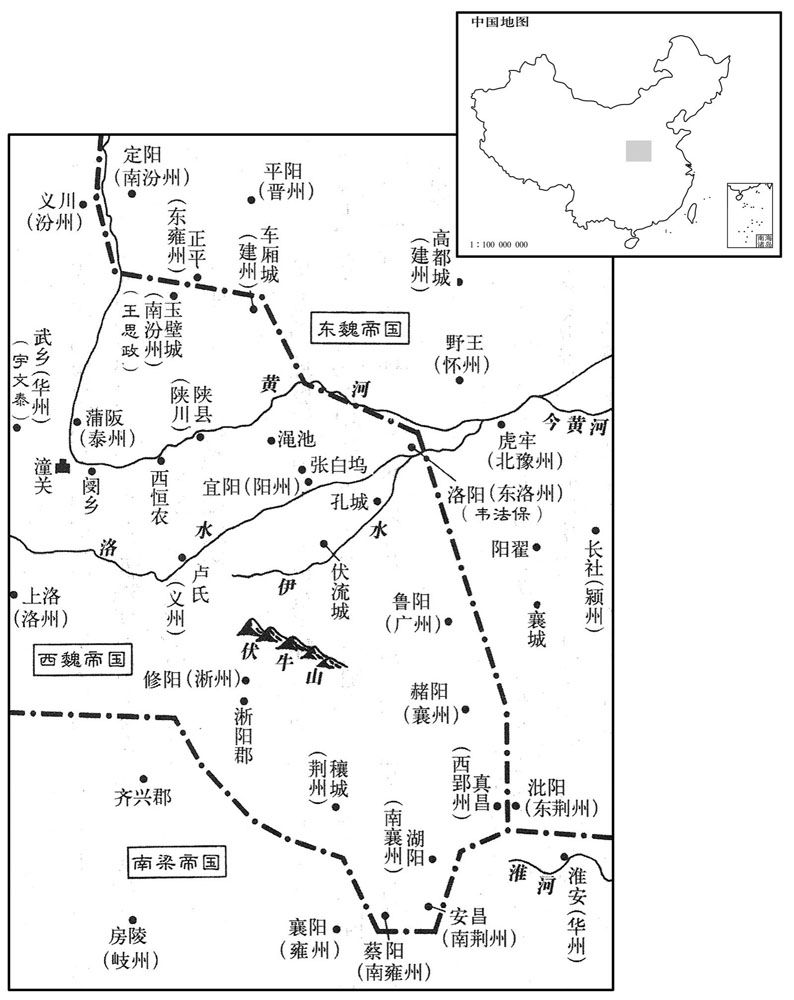
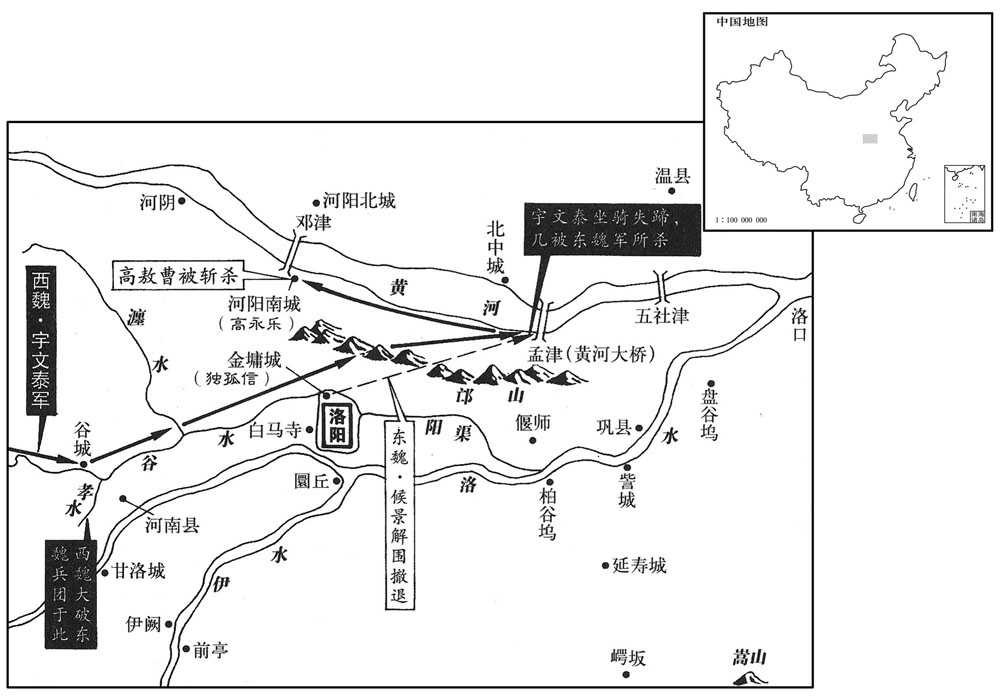
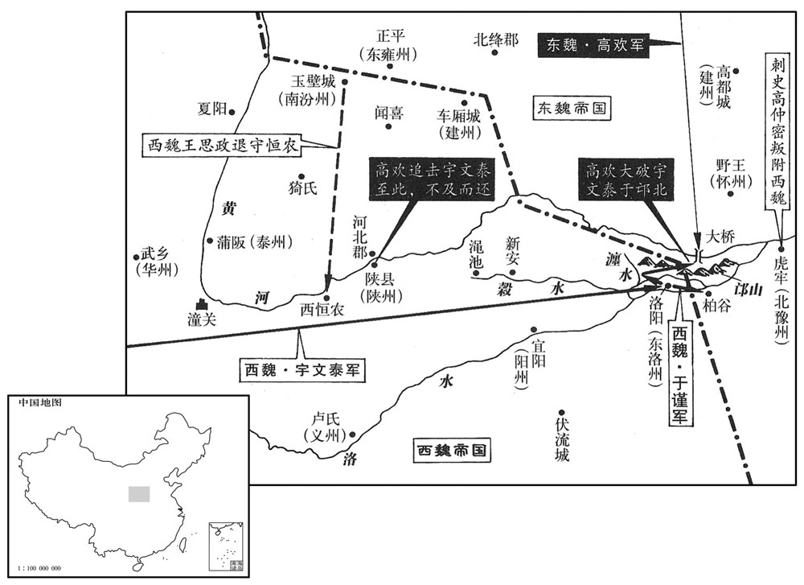

卷次与人物目录 / 卷158
资治通鉴 · 卷第一百五十八【梁纪十四】
公元538年至公元544年 · 原文、白话与胡三省注
本页按胡注本编排保存全卷内容。白话采用本站所据译本，未可靠对应的内容另列说明；事件标题用于定位，并非原书文字。
本卷共149段原文，143段有译文对应，6段缺译或待核对。
卷第一百五十八【梁纪十四】起着雍敦牂（戊午），尽阏逢困敦（甲子），凡七年。
卷首原文与注释
高祖武皇帝十四
公元538年 · 梁高祖武皇帝大同四年
大同四年〔（戊午、五三八）〕
上传原文的注释括号有异常，字符原样保留；无法可靠划分的段落默认全文显示。
本年事件索引（现代整理）
- 梁武帝遇日食
- 东魏获巨象并改元元象
- 梁武帝亲耕藉田
- 贺拔仁攻南汾州，侯景收复河南四州
- 柔然头兵可汗与西魏结亲
- 高欢因沙苑战败请解职
- 柔然送悼后入魏，魏立郁久闾氏为后
- 高欢到邺城朝见东魏孝静帝
- 东魏遣郑伯猷出使梁朝
- 东魏荆州刺史王则进犯淮南
- 囚徒李胤之获得如来舍利，东魏大赦
- 侯景等围攻金墉，独孤信告急
- 宇文泰进军，莫多娄贷文战败身死
- 宇文泰追击侯景，险些被俘
- 西魏大破东魏，高敖曹战死
- 万俟洛拒敌护军，获高欢嘉奖
- 东西魏邙山交战，西魏焚营撤退
- 蔡佑步战突围，箭杀东魏猛士
- 西魏攻克恒农，诛降卒首领
- 蔡佑追上宇文泰，受任东道行台
- 东魏降卒在关中作乱，长安告急
- 宇文泰回师平定关中叛乱
- 高欢攻金墉，毁城而还
- 裴让之劝高欢释放其兄弟
- 西魏文帝回长安，宇文泰屯兵华州
- 贺拔仁平定邢磨纳卢仲礼
- 高欢礼遇儒生卢景裕教育诸子
- 西魏归还三将首级给东魏
- 梁遣刘孝仪出使东魏
- 是云宝袭洛阳，魏军收复襄广以西
- 东魏整顿滥建佛寺之风
- 李延孙与韦法保据河南抗东魏
- 韦孝宽设计离间并擒段琛牛道恒
- 高澄代理吏部尚书，选拔贤能
春，正月，辛酉朔，日有食之。
春季，正月，辛酉朔（初一），发生日食。

本年形势与背景参考图
东魏砀郡获巨象，送邺。〔魏收志：孝昌二年，置砀郡，治下邑城，属徐州。砀，徒朗翻。〕丁卯，大赦，改元元象。
东魏的砀郡捕获到一头巨象，将它送往国都邺城。丁卯（初七），孝静帝下令大赦天下，并把年号改为“元象。”
二月，己亥，上耕藉田。
两版字句有差异，建议核对原文。
二月，已亥（初十），梁武帝在藉田耕作。
东魏大都督善无贺拔仁攻魏南汾州，刺史韦子粲降之，〔降，户江翻；下同。〕丞相泰灭子粲之族。东魏大行台侯景等治兵于虎牢，〔治，直之翻。〕将复河南诸州，魏梁迥、韦孝宽、赵继宗皆弃城西归。〔梁迥在颍川，韦孝宽在汝南，未知赵继宗所弃何城也。〕侯景攻广州，〔【章：甲十一行本「州」下有「数旬」二字；乙十一行本同；孔本同；退斋校同。】〕未拔，〔广州治襄城。〕闻魏救兵将至，集诸将议之，行洛州事卢勇请进观形势。〔东魏洛州，治洛阳。诸将，即亮翻；下同。〕乃帅百骑至大隗山，〔班志：河南郡密县有大騩山。魏收志，密县属荥阳郡。五代志，荥阳郡新郑县有大騩山。帅，读曰率。骑，奇寄翻。騩、隗同，五贿翻，又音归。〕遇魏师。日已暮，勇多置幡旗于树颠，夜，分骑为大队，鸣角直前，擒魏仪同三司程华，斩仪同三司王征蛮而还。〔还，从宣翻，又如字。〕广州守将骆超退：「超」作「越」。】〕遂以城降东魏，丞相欢以勇行广州事。勇，辩之从弟也。〔卢辩仕于西魏，而勇仕于东魏。从，才用翻。〕于是南汾、颍、豫、广四州复入东魏。〔考异曰：典略，侯景克广州在十一月。按北史魏文帝纪，「二月，东魏陷南汾、颍、豫、广四州。」今从之。〕
东魏大都督善无人贺拔仁攻打西魏南汾州，南汾州刺史韦子粲向贺拔仁投降，西魏丞相宇文泰听到这一消息后，屠杀了韦子粲的全部家族。东魏大行台侯景等人在虎牢整顿部队，准备收复黄河以南的各州，看到势头不对，西魏的梁迥、韦孝宽、赵继宗都放弃他们所守的城跑回西部地区。侯景攻打广州，没有取得成功，他听说西魏的救兵将要赶到，就召集全体将领一道商议对策。兼管洛州事务的卢勇请求去前方观察形势，在征得侯景同意后，他便带领一百名骑兵来到大隗山，在这里，他们遇上了西魏的部队。当时已是黄昏时刻，卢勇叫人在树木的顶端插上许多旗帜，表示兵力很多，等到夜里，他把手下的骑兵分成十队，大家吹着号角直向前冲去，抓获了西魏的仪同三司程华，杀死了仪同三司王征蛮，然后返回。广州的守将骆超于是打开城门向东魏投降，东魏的丞相高欢下令让卢勇再兼管广州的事务。卢勇是卢辩的堂弟。从此，南汾、颖、豫、广这四个州重新划入东魏的版图。
初，柔然头兵可汗始得返国，〔事见一百四十九卷普通二年。可，从刊入声。汗，音寒。〕事魏尽礼。及永安以后，雄据北方，礼渐骄倨，虽信使不绝，不复称臣。〔使，疏吏翻；下同。复，扶又翻。〕头兵尝至洛阳，心慕中国，乃置侍中、黄门等官；后得魏汝阳王典签淳于覃，亲宠任事，以为秘书监，使典文翰。及两魏分裂，头兵转不逊，数为边患。〔数，所角翻。〕魏丞相泰以新都关中，方有事山东，欲结婚以抚之，以舍人元翌女为化政公主，妻头兵弟塔寒。〔妻，七细翻。〕又言于魏主，请废乙弗后，纳头兵之女。甲辰，以乙弗后为尼，〔魏立乙弗后，见上卷大同元年。〕使扶风王孚迎头兵女为后。头兵遂留东魏使者元整，不报其使。
当初，柔然国的头兵可汗刚被放回国的时候，对北魏毕恭毕敬，礼仪周全。到了永安年间之后，头兵可汗在他所占据的北方开始称雄，于是对北魏渐渐地变得傲慢起来，虽然仍旧和北魏保持书信与使者来往，但是不再自己称臣了。头兵可汗曾经到过洛阳，心里仰慕中原，就按照北魏的官制设置了侍中、黄门等官职；后来他得到了北魏汝阳王的典签淳于覃，非常亲近宠信，十分重用，委任为秘书监，使其主管文书。在北魏分裂成东魏、西魏之后，头兵可汗变得更加傲慢放肆，多次在边境地区制造事端。西魏的丞相宇文泰考虑到刚在关中地区建立新都，同时正和东魏发生摩擦，就想用联姻的办法来安抚头兵可汗。请文帝将舍人元翌的女儿封为化政公主，让她嫁给头兵可汗的弟弟塔寒为妻。宇文泰又劝说文帝，请他废掉乙弗皇后，娶头兵可汗的女儿。甲辰（十五日），文帝叫乙弗皇后削发为尼，又派遣扶风王元孚去迎接头兵可汗的女儿来当西魏的新皇后。头兵可汗于是扣留了东魏的使者元整，不派使者回报。
三月，辛酉，东魏丞相欢以沙苑之败，〔败见上卷上年。〕请解大丞相，诏许之；顷之，复故。〔考异曰：北齐帝纪，止有高祖解丞相年月，而无复故之文。按兴和元年议历，有丞相田曹参军信都芳。盖因邙山之捷而复也。〕
三月，辛酉（初二），东魏的丞相高欢由于沙苑战役失利，请求解除他的大丞相职务，孝静帝颁下诏书，表示同意；没过多久，高欢又重新担任大丞相。
柔然送悼后于魏，〔郁久闾后谥曰悼。〕车七百乘，马万匹，驼二千头。至黑盐池，〔唐志：盐州五原县有乌池、白池。乌池，盖即黑盐池也。乘，绳证翻。〕遇魏所遣卤簿仪卫。柔然营幕，户席皆东向，扶风王孚请正南面，后曰：「我未见魏主，固柔然女也。魏仗南面，我自东向。」丙子，立皇后郁久闾氏。丁丑，大赦。以王盟为司徒。丞相泰朝于长安，还屯华州。〔朝，直遥翻；下同。华，户化翻。〕
柔然国终于将悼后送往西魏，陪嫁品有七百辆车、一万匹马、二千头骆驼。到达黑盐池的时候，遇上了西魏派来迎接新皇后的仪仗队与侍卫队。柔然人宿营时，门户与席子都朝向东方，扶风王元孚请他们朝向正南方，悼后说道：“我还没有见到魏主，依然算是柔然国的女子，你们魏国的仪仗队面向南方，我自己面向东方。”丙子（十七日），文帝正式册封郁久闾氏为皇后。丁丑（十八日），大赦天下。封王盟为司徒。丞相宇文泰来到长安朝拜文帝之后，又返回华州屯兵。
夏，四月，庚寅，东魏高欢朝于邺；〔既解丞相，遂不书官而书姓。通鉴纪实，非如春秋之有所褒贬也。〕壬辰，还晋阳。
夏季，四月，庚寅（初二），东魏的高欢来到邺城朝拜孝静帝。壬辰（初四），高欢返回晋阳。
五月，甲戌，东魏遣兼散骑常侍郑伯猷来聘。〔考异曰：魏帝纪在二月丙辰，盖始受命时也。今从梁帝纪。〕
五月，甲戌（十六日），东魏派遣兼散骑常侍郑伯猷到梁朝聘问。
秋，七月，东魏荆州刺史王则寇淮南。〔此淮南，谓光城、弋阳之地，在淮水上流之南，非指古淮南郡治寿春之淮南。〕
秋季，七月，东魏荆州刺史王则侵犯淮河以南地区。
癸亥，诏以东冶徒李胤之得如来舍利，大赦。〔如来，犹言佛也。〕
癸亥（初六），由于东治的犯人李胤之得到了如来佛的舍利，梁武帝颁下诏书，大赦天下。
东魏侯景、高敖曹等围魏独孤信于金墉，太师欢帅大军继之；〔帅，读曰率；下同。〕景悉烧洛阳内外官寺民居，存者什二三。魏主将如洛阳拜园陵，〔魏自孝文帝迁洛以后，孝武帝西迁以前，园陵皆在洛州。会信等告急，遂与丞相泰俱东，命尚书左仆射周惠达辅太子钦守长安，开府仪同三司李弼，车骑大将军达奚武帅千骑为前驱。
两版字句有差异，建议核对原文。
东魏的侯景、高敖曹等人在金墉包围了西魏的独孤信，太师高欢率领大军跟在后头；侯景放火焚烧了洛阳城内外所有的官衙与居民住宅，只有十分之二三的房子得以幸存。西魏的文帝正要去洛阳祭拜列祖列宗的园陵，刚好收到独孤信等人的告急文书，就和丞相宇文泰一道东行。文帝命令尚书左仆射周惠达辅佐太子元钦守卫长安，又令开府仪同三司李弼、车骑大将军达奚武率领一千名骑兵作为先头部队。
八月，庚寅，丞相泰至谷城，〔汉志，河南郡有谷成县。师古注曰：即今新安。水经注曰：谷城县城西临谷水。骑，奇寄翻；下同。〕侯景等欲整陈以待其至，〔陈，读曰阵。〕仪同三司太安莫多娄贷文请帅所部击其前锋，〔莫多娄，虏三字姓。〕景等固止之。贷文勇而专，不受命，与可朱浑道元以千骑前进，夜，遇李弼、达奚武于孝水。〔五代志：新安县有孝水。水经注：孝山出廆山之阴，北流注于谷，在河南城西四十里。〕弼命军士鼓噪，曳柴扬尘，贷文走，弼追斩之，道元单骑获免，悉俘其众送恒农。〔恒，户登翻。〕
八月，庚寅（初三），西魏丞相宇文泰到达城，侯景等人准备排列好军阵等待宇文泰前来，仪同三司太安人莫多娄贷文请求带领自己的部属去袭击宇文泰的先遣部队，侯景等人坚决阻止了他。莫多娄贷文生性勇敢而执拗，不接受上司的命令，和可朱浑道元两人领着一千名骑兵向前方进发。夜间，他们在孝水遇见了李弼、达奚武。李弼命令士兵们擂鼓呐喊，在地上拖树枝扬起尘土，莫多娄贷文以为对方是大部队，转身逃跑，李弼追上去杀掉了他。可朱浑道元单人匹马逃了回去，手下的人都被俘虏，被送往恒农。
泰进军瀍东，〔瀍水出河南谷城县北山，东与千金渠合，又东过洛阳县南，又东过偃师县，又东入于洛。〕侯景等夜解围去。辛卯，泰帅轻骑追景至河上，景为陈，北据河桥，南属邙山，〔陈，读曰阵；下陵陈、置陈、陷陈同。属，之欲翻。景置陈北据河桥者，虑兵有利钝，先保固其北归之路也。南属邙山，可以见其兵多矣。景军参用马步，其置陈坚固，宇文泰以轻骑来，见其陈势如此，敛兵不进可也，遽前合战，亦屡胜而骄耳。〕与泰合战。泰马中流矢惊逸，遂失所之。泰坠地，东魏兵追及之，左右皆散，都督李穆下马，以策抶泰背骂曰：「笼东军士！〔抶，丑栗翻，打也。荀子曰：仁人之兵，当之者溃，触之者角摧，按角鹿埵陇种东笼而退耳。杨倞注曰：其义未详，盖皆摧败披靡之貌。陆德明曰：东笼，沾湿貌也，如衣服之沾湿然。〕尔曹王〔【章：甲十一行本「王」作「主」；乙十一行本同；孔本同；熊校同。】〕何在，而独留此﹖」追者不疑其贵人，舍之而过。穆以马授泰，与之俱逸。
宇泰进军水东部地区，侯景等人在夜里解除了金墉之围离去。辛卯（初四）宇文泰统率轻装骑兵追击侯景直到黄河边上，侯景布置军阵，在北面占据了河桥，在南面连接邙山，与宇文泰交战。宇文泰的战马中了流箭，受了惊，于是胡乱地狂奔起来。宇文泰从马上跌了下来，东魏的士兵追到跟前，身边的人都逃散了。都督李穆见到这种情景，跳下马来，挥鞭抽打宇文泰的后背，骂道：“你这狼狈不堪的小兵，你们的头子在哪里，为什么你一个人呆在这儿？”追赶的东魏兵也就没想到宇文泰是贵人，放弃了他从旁边过去。李穆将自己的马让宇文泰骑上，两人一起逃掉了。
魏兵复振，击东魏兵，大破之。〔宇文泰先以轻骑合战而不利，大兵继至，军势复振，故大破东魏。〕东魏兵北走。京兆忠武公高敖曹，意轻泰，建旗盖以陵陈，魏人尽锐攻之，一军皆没，敖曹单骑走投河阳南城。〔河阳南城，在河桥南岸，北岸即北中城。〕守将北豫州刺史高永乐，欢之从祖兄子也，〔乐，音洛。从，才用翻；下其从同。〕与敖曹有怨，闭门不受。敖曹仰呼求绳，不得，拔刀穿阖未彻而追兵至。〔杜预曰：阖，门扇也。未彻，未透也。彻，敕列翻。〕敖曹伏桥下，追者见其从奴持金带，〔从，才用翻。〕问敖曹所在，奴指示之。敖曹知不免，奋头曰：「来！与汝开国公。」〔言得其头，西魏将以开国赏之也。〕追者斩其首去。高欢闻之，如丧肝胆，〔丧，息浪翻。〕杖高永乐二百，赠敖曹太师、大司马、太尉。泰赏杀敖曹者布绢万段，岁岁稍与之，比及周亡，犹未能足。〔比，必利翻。〕魏又杀东魏西兖州刺史宋显等，虏甲士万五千人，赴河死者以万数。
两版字句有差异，建议核对原文。
部队重新振作之后，又向东魏的部队发起了攻击，东魏遭到了惨败，将士们纷纷逃往北方。京兆忠武公高敖曹心里轻视宇文泰，他树起旗盖以显示军阵的威风，西魏的将士们都迅猛地攻过去，打得对方全军覆没，高敖曹单人匹马跑去投奔河阳南城。该城的守将北豫州刺史高永乐，是高欢族兄的儿子，与高敖曹有怨仇，关紧城门不放高敖曹进去。高敖曹仰头大喊要求上面放一根绳子下来，见不被理睬，就拔出腰刀凿门，可是门还没有凿开，追兵就赶到了，高敖曹只好趴到桥的下面。追赶的西魏兵看见他的奴仆手里拿着一条金带，就问高敖曹的下落，奴仆指出了主人藏的地方。高敖曹知道自己已无法免除一死，便昂起脑袋对追兵说道：“来吧！送给你一个当开国公的机会。”追兵砍下他的脑袋离去了。高欢听到这个噩耗，好象丧失了肝胆一样，打了高永乐二百大棍，又追封高敖曹为太师、大司马、太尉。宇文泰奖赏杀高敖曹的人一万段布匹与绢帛，每年给他一部分，一直到北周灭亡的时候，还没有给足。西魏的部队又杀死了东魏西兖州的刺史宋显等人，俘虏士兵一万五千人，至于淹死在黄河里的东魏兵更是数以万计。
初，欢以万俟普尊老，〔爵尊而齿老也。万，莫北翻。俟，渠之翻。〕特礼之，尝亲扶上马。其子洛免冠稽首曰：〔上，时掌翻。稽，音启。〕「愿出死力以报深恩。」及邙山之战，诸军北渡桥，〔北渡河桥也。〕洛独勒兵不动，谓魏人曰：「万俟受洛干在此，能来可来也！」魏人畏之而去，欢名其所营地为回洛。〔唐志：河阳关南有回洛故城。〕
当初，高欢因为万俟普爵位高年龄大，所以给予他特殊的礼遇，曾经亲自扶他上马。万俟普的儿子万俟洛摘下帽子向高欢叩头，说：“我愿出死力来报答您的大恩大德。”在邙山战役中，其他部队都跨过河桥向北方逃跑，唯独万俟洛命令自己的部属停留在原地，他对西魏的将士们喊道：“我万俟受洛干在此，你们能过来的就来吧！”西魏的将士都感到害怕，离开了。后来，高欢将万俟洛安营扎寨的地方命名为回洛。
是日，东、西魏置陈既大，首尾悬远，从旦至未，戢数十合，〔史言两军确鬬。〕氛雾四塞，〔塞，悉则翻。〕莫能相知。魏独孤信、李远居右，赵贵、怡峰居左，战并不利；又未知魏主及丞相泰所在，皆弃其卒先归。开府仪同三司李虎、念贤等为后军，见信丢退，即与俱去。泰由是烧营而归，留仪同三司长孙子彦守金墉。
这一天，东、西魏布置的军阵都非常庞大，头尾相距很远，从早晨到晚上，双方一共交战了几十次，直打得烟雾尘土四处弥漫，相互都看不清楚。西魏的独孤信、李远处在右面，赵贵、怡峰处在左面，交战过程中都失利了；他们又不知道文帝与丞相宇文泰在哪里，于是都扔下了自己率领的士兵先跑回来。开府仪同三司李虎、念贤等人属于后续部队，看到独孤信等人退却，就和他们一道离开了战场。宇文泰因此只好烧掉营帐返回，留下仪同三司长孙子彦镇守金墉。
王思政下马，举长左右横击，一举辄踣数人。陷陈既深，从者尽死，思政被重创，闷绝，会日暮，敌亦收兵。思政每战常著破衣弊甲，敌不知其将帅，故得免。帐下督雷五安于战处哭求思政，会其已苏，割衣裹创，扶思政上马，夜久，始得还营。
王思政跳下马来，举起长矛左右出击，一抬手就得倒下几个人。慢慢地，他陷入敌人的军阵已经很深，跟随着他的人都死光了，他自己也身受重伤，昏迷过去。此刻已临近夜晚，敌人也开始收兵了。王思政每一次打仗都穿着破旧的衣袍与盔甲，敌人看不出他是将帅，因此他幸免于难。他的帐下督雷五安在战场上哭着寻找他，刚好他也已经苏醒过来，雷五安就从衣服上割下一块布，为他包扎好伤口，然后扶他上马，入夜很久了，他们才返回营地。
平东将军蔡下马步斗，左右劝乘巴以备仓猝，怒曰：“丞相爱我如子，今日岂惜生乎！”帅左右十馀人合声大呼，击东魏兵，杀伤甚众。东魏围之十余重，弯弓持满，四面拒之。东魏人募厚甲长刀者直进取之，去可三十步，左右劝射之，曰：“吾曹之命，在此一矢，岂可虚发！”将至十步，乃射之，应弦而倒，东魏兵稍却，徐引还。平东将军蔡跳下马徒步格斗，身边的部属都劝他再上马，以便遇上紧急情况时赶紧离开，蔡怒气冲冲地说道：“宇文丞相就象爱他自己的儿子一样爱我，今天我怎么能在乎自己的性命！”说罢，他带着身边的十几个人齐声大喊着，向东魏的将士冲击，杀伤了许多人。东魏的部队把他们围了足足十几层，蔡拉弓搭箭，抵抗四面八方的敌人。东魏出重金悬赏，身穿厚甲手持长刀的人一直向前猛冲，想要捉住他们，大约只有三十步远了，蔡身边的部属都劝他放箭，蔡回答说：“我们的性命，全在这一枝箭上头，怎么可以随便射出去？”直到敌人离他只有十步远的时候，蔡才将箭射出，随着弓弦一动，打头的东魏兵倒在地上，后面的人向后退了一些，蔡慢慢地带领自己的部下返回营地。
平东将军蔡佑下马步鬬，左右劝乘马以备仓猝，〔谓兵有邂逅，乘马则仓猝可以奔驰。〕佑怒曰：「丞相爱我如子，今日岂惜生乎！」帅左右十余人合声大呼，击东魏兵，杀伤甚众。东魏围之十余重，〔帅，读曰率。呼，火故翻。重，直龙翻。〕佑弯弓持满，四面拒之。东魏人募厚甲长刀者直进取之，去佑可三十步，左右劝射之，佑曰：「吾曹之命，在此一矢，岂可虚发！」将至十步，佑乃射之，应弦而倒，〔射，而亦翻。〕东魏兵稍却，佑徐引还。
本段缺少可靠对应白话，原文完整保留；未使用生成译文。
魏主至恒农，守将已弃城走，所虏降卒在恒农者相与闭门拒守，〔恒，户登翻。将，即亮翻。降，户江翻。〕丞相泰攻拔之，诛其魁首数百人。
西魏的文帝来到恒农的时候，守将已经放弃该城逃跑了，城里原来被西魏俘虏的东魏兵一同关闭城门，进行抵抗，西魏丞相宇文泰攻下了该城，杀掉了几百名领头的人。
蔡佑追及泰于恒农，夜，见泰，泰曰：「承先，〔蔡佑字承先。〕尔来，吾无忧矣。」泰惊不得寝，枕佑股，然后安。〔史言泰气衰胆失。枕，之任翻。〕佑每从泰战，常为士卒先，战还，诸将皆争功，佑终无所言。泰每叹曰：「承先口不言勋，我当代其论叙。」〔史言蔡佑沈勇不伐。〕泰留王思政镇恒农，除侍中、东道行台。
到处寻找宇文泰的蔡一直追到了恒农，在晚上终于见到宇文泰，宇文泰叫着蔡的表字说道：“承先，你一来，我就没有什么可忧虑的了。”宇文泰由于受到惊吓无法入睡，枕了蔡的大腿之后才平静地进入梦乡。蔡每次跟随宇文泰作战，总是身先士卒，打仗回来，其他将领都争着邀功请赏，而蔡不说一句表现自己的话。宇文泰常常感慨地说：“承先嘴里不提自己的功劳，可我应当替他把一切谈明白。”宇文泰留下王思政镇守恒农，任命他为侍中、东道行台。
魏之东伐，关中留守兵少，〔少，诗沼翻。〕前后所虏东魏士卒散在民间，闻魏兵败，谋作乱。李虎等至长安，计无所出，与太尉王盟、仆射周惠达等奉太子钦出屯渭北。百姓互相剽掠，关中大扰。〔剽，匹妙翻。〕于是沙苑所虏东魏都督赵青雀、雍州民于伏德等遂反，据〔【章：甲十一行本「据」上有「青雀」二字；乙十一行本同；孔本同；退斋校同。】〕长安子城，伏德保咸阳，〔雍，于用翻。后魏置咸阳郡于石安县。石安，汉渭城县，秦之咸阳也，石勒改曰石安。五代志：京兆渭阳县，旧置咸阳郡。〕与咸阳太守慕容思庆各收降卒以拒还兵。〔降卒，东魏之卒降于西魏，散在民间者也。还兵，西魏之兵自洛西还者也。降，户江翻。〕长安大城民相帅以拒青雀，日与之战。〔帅，读曰率。〔大都督侯莫陈顺击贼，屡破之，贼不敢出。顺，崇之兄也。
西魏这次东伐，在关中地区留守的兵员很少，前前后后俘虏的东魏士兵都被分散在民间，他们一听说西魏的部队遭到了失败，纷纷图谋作乱。李虎等人来到长安，想不出好的对策，便和太尉王盟、仆射周惠达等人侍奉太子元钦出城，到渭北地区驻防。百姓们相互掠夺，关中地区惊扰得非常厉害。在沙苑战役中被俘虏的东魏都督赵青雀，雍州的百姓于伏德等人趁机造反，占据了长安所属的小城，于伏德又占有了咸阳，与咸阳太守慕容思庆各自召集东魏的降兵，以便抵抗从战场上返回的西魏将士。长安主城中的百姓互相组织起来，共同抵抗赵青雀，每天同他交战。大都督侯莫陈顺袭击了东魏的那些降兵，多次打败他们，吓得降兵们不敢出城。侯莫陈顺是侯莫陈崇的兄长。
扶风公王罴镇河东，大开城门，悉召军士谓曰：“今闻大军失利，青雀作乱，诸人莫有固志。王罢受委于此，以死报恩。有能同心者可共固守；必恐城陷，任自出城。”众感其言，皆无异志。
镇守河东的扶风公王罴大开城门，叫来所有的将士，对他们说道：“今天我听说咱们的大部队在前线失利，赵青雀在京城作乱，许多人已经丧失了信心，而我王罴受委托守卫河东，决心以死来报答皇上与宇文丞相的恩德。你们中间能够跟我同心协力的人可以和我一道坚守此城；实在害怕本城陷落的可以随便出城。”大家都被他的话感动了，就一心与他守城。
魏主留阌乡。〔阌，音旻。〕丞相泰以士马疲弊，不可速进，且谓青雀等乌合，不能为患，曰：「我至长安，以轻骑临之，必当面缚。」通直散骑常侍吴郡陆通谏曰：〔陆通本吴人，曾祖载从宋武帝入关，及刘义真之败没于赫连，遂居关中。〕「贼逆谋久定，必无迁善之心，蜂虿有毒，〔左传臧文仲之言。虿，丑迈翻。〕安可轻也！且贼诈言东寇将至，〔东寇，谓东魏之兵。〕今若以轻骑临之，百姓谓为信然，〔以贼言为信也。〕益当惊扰。今军虽疲弊，精锐尚多，以明公之威，总大军以临之，何忧不克！」泰从之，引兵西入。父老见泰至，莫不悲喜，士女相贺。华州刺史宇文导引兵入咸阳，斩思庆，禽伏德，南渡渭，与泰会，攻青雀，破之。〔华，户化翻。〕太保梁景睿以疾留长安，与青雀通谋，泰杀之。
西魏的文帝留在阌乡。丞相宇文泰考虑到士兵与马匹都已经疲惫不堪，不再能快速前进，并且认为赵青雀等人不过是一群乌合之众，不会成为大的祸患，就说道：“我到达长安，让轻装的骑兵直冲进去，赵青雀这些人一定会自缚而降，向我当面请罪。”通直散骑常侍吴郡人陆通劝告说：“那些奸贼很久之前就已图谋叛乱，一定没有改恶从善的心意，蜂、蝎是有毒的，怎么可以轻视？况且那些贼寇欺骗百姓，说东魏人将要到达，我们现在如果派轻装骑兵冲进城去，老百姓就会觉得情况真的象那些贼寇说的那样，于是就会更加惊慌不安。眼下我们的部队虽然已经疲劳，但是精锐兵马还比较多，凭着您的威望，带着大部队进长安城，哪里用得着忧虑打败不了敌人呢？”宇文泰听从了陆通的意见，带领部队向西入城。城里的父老们看见宇文泰回来了，没有一个不是悲喜交加，男男女女们都相互庆贺。华州刺史宇文导带领人马攻进咸阳，杀掉了慕容思庆，捉住了于伏德，又南渡渭河，与宇文泰汇合，然后向赵青雀发起了进攻，挫败了对方。西魏的太保梁景睿因病留在长安，与赵青雀一同密谋叛乱，宇文泰杀掉了他。
东魏太师欢自晋阳将七千骑至孟津，未济，闻魏师已遁，遂济河，遣别将追魏师至崤，〔魏收志：太和十一年，置崤县，属恒农郡，因三崤山以名县；隋并崤县入河南熊耳县。程大昌曰：三崤山，一名嵚崟山。元和志曰：自东崤至西崤三十五里。东崤长阪数里，峻阜绝涧，车不得方轨。西崤全是石阪十二里，险不异东崤。此二崤皆在秦关之东，汉关之西。〕不及而还。〔还，从宣翻，又如字；下同。〕欢攻金墉，长孙子彦弃城走，焚城中室屋俱尽，欢毁金墉而还。
东魏的太师高欢带领七千名骑兵从晋阳赶到孟津，还没有开始渡黄河，就听说西魏的部队已经逃走，于是立即渡过黄河，又派遣其他将领追击西魏的兵马，一直追到崤县还没有赶上，这才返回。高欢向金墉发起了进攻，长孙子彦放弃该城逃跑，临行前把城里的房屋烧得干干净净，高欢拆毁了金墉城之后回到东魏。

东魏之迁邺也，〔见一百五十六卷中大通六年。〕主客郎中裴让之留洛阳；独孤信之败也，〔谓邙山之败，信先弃军西还。〕让之弟诹之随丞相泰入关，为大行台仓曹郎中。欢囚让之兄弟五人，让之曰：「昔诸葛亮兄弟，事吴、蜀各尽其心，〔谓亮事蜀，瑾事吴也。〕况让之老母在此，不忠不孝，必不为也。明公推诚待物，物亦归心；若用猜忌，去霸业远矣。」欢皆释之。
东魏将国都迁往邺城的时候，主客郎中裴让之留在洛阳；独孤信在邙山之战中失败以后，裴让之的弟弟裴诹之跟随西魏的丞相宇文泰进入关中，被任命为大行台仓曹郎中。高欢囚禁了裴让之兄弟五人，裴让之对高欢说：“昔日诸 葛亮兄弟二人，一个帮助吴国，一个为蜀国服务，各自都尽心尽力。何况我裴让之还有老母亲在这里，不忠不孝之事我是绝对不会干的。您要是诚心诚意地对待一个人，他自然也会把心交给您；如果您喜欢猜疑人，那么就很难建立起霸业。”高欢听罢，将裴让之兄弟都释放了。
九月，魏主入长安，丞相泰还屯华州。〔华，户化翻。〕
九月，西魏文帝返回长安，丞相宇文泰也回到华州屯兵。
东魏大都督贺拔仁击邢磨纳、卢仲礼等，平之。〔磨纳等起兵见上卷上年。〕
东魏的大都督贺拔仁袭击并消灭了邢磨纳、卢仲礼等人的兵马。
卢景裕本儒生，太师欢释之，召馆于家，使教诸子。景裕讲论精微，难者或相诋诃，大声厉色，言至不逊，而景裕神采俨然，风调如一，从容往复，〔难，乃旦翻。诋，丁礼翻。诃，虎何翻。调，徒钓翻。从，千容翻。〕无际可寻。性清静，历官屡有进退，无得失之色；弊衣粗食，恬然自安，终日端严，如对宾客。
卢景裕本是一位读书人，太师高欢释放他之后，把他叫到家里，让他开设书塾，教自己的几个儿子。卢景裕的讲解议论精辟入微，和他辩论的人有的诋毁呵斥他，大声嚷嚷，表情严厉，言语很不礼貌，但是卢景裕依然神情庄严，风度不变，从容不迫地辩论，看不出一点情绪受到影响的痕迹。他生性喜欢清静，为官生涯中多次被提升或降职，可从来不表露出得意或失意的样子；平时，他穿劣质的衣服，吃粗陋的食物，恬淡安然，整天端庄严肃，好象老在面对宾客一样。
冬，十月，魏归高敖曹、窦泰、莫多娄贷文之首于东魏。
冬季，十月，西魏将高敖曹、窦泰、莫多娄贷文的头颅归还给东魏。
散骑常侍刘孝仪等聘于东魏。〔散，悉亶翻。骑，奇寄翻。〕
梁朝散骑常侍刘孝仪等人到东魏聘问。
十二月，魏是云宝袭洛阳，东魏洛州刺史王元轨弃城走。都督赵刚袭广州，拔之。于是自襄、广以西城镇复为魏。〔魏收志：孝昌中置襄州，领襄城、舞阴、南安、期城、北南阳、建城郡。五代志：颍川郡叶县，后齐置襄州。复，扶又翻；下孙复同。〕
本段缺少可靠对应白话，原文完整保留；未使用生成译文。
魏自正光以后，四方多事，民避赋役，多为僧尼，至二百万人，寺有三万余区。至是，东魏始诏「牧守、令长，擅立寺者，计其功庸，〔守，式又翻。长，知两翻。庸，用也，劳也，雇也。〕以枉法论。」
北魏自从正光年间之后，四面八方经常发生各种事端，百姓为了躲避赋税与徭役，许多人出家当了和尚与尼姑。整个国家的出家人达到二百万，寺庙也足有三万多处。到此时，东魏颁下诏书给各级地方官，凡是擅自建立寺庙的，根据所花费劳工的多少，以枉法论处。
初，魏伊川土豪李长寿为防蛮都督，〔五代志：河南郡陆浑县，齐置伊川郡，领南陆浑县。春秋时秦、晋迁陆浑之戎于伊川，故郡以为名。伊阙以南大山长谷，蛮多居之，魏置都督以防焉。〕积功至北华州刺史。孝武帝西迁，长寿帅其徒拒东魏，〔华，户化翻。帅，读曰率。〕魏以长寿为广州刺史。侯景攻拔其壁，杀之。其子延孙复收集父兵以拒东魏，魏之贵臣广陵王欣、录尚书长孙稚等皆携家往依之，〔长，知两翻。〕延孙资遣卫送，使达关中。东魏高欢患之，数遣兵攻延孙，不能克。〔数，所角翻。〕魏以延孙为京南行台、节度河南诸军事、广州刺史。〔京南，谓洛京以南也。〕延孙以澄清伊、洛为己任，魏以延孙兵少，〔少，诗沼翻。〕更以长寿之伲京兆韦法保为东洛州刺史，〔西魏洛州治上洛，以洛阳之地为东洛州。〕配兵数百以助之。法保名佑，以字行，既至，与延孙连兵置栅于伏流。〔伏流城，伊川郡治所。隋改南陆浑县曰伏流。水经注曰：陆浑故城东南八十许里有三涂山，伊水径其下，又东北径伏流岭东，刘澄之永初记称伏流县西有伏流坂者。今山在县南崖口北三十里许，西则非也。〕独孤信之入洛阳也，欲缮修宫室，使外兵郎中天水权景宣，〔曹魏置二十三郎，有中兵、外兵、都兵、别兵，元魏以后，中兵、外兵又分左、右。〕帅徒兵三千出采运。〔采运者，使之采木运入洛阳城也。〕会东魏兵至，河南皆叛，景宣间道西走，〔间，古苋翻。〕与李延孙相会，攻孔城，拔之，〔魏收志：天平中置新城郡，治孔城，属北荆州。五代志：河南郡伊阙县，旧曰新城，置新城郡。杜佑曰：孔城防，今伊阙县东南故城是。又曰：高齐置孔城防于寿安县。〕洛阳以南寻亦西附。丞相泰即留景守张白坞，〔坞在宜阳西北。水经注：河内轵县有张白骑坞，在湨水北原上，据二溪之会，北带深隍，三面阻险，唯西面板筑而已。〕节度东南诸军应关西者。是岁，延孙为其长史杨伯兰所杀，韦法保即引兵据延孙之栅。
当初，西魏伊川的当地豪强李长寿出任防蛮都督，后来积累了不少功劳，被提升为北华州刺史。孝武帝西迁的时候，李长寿率领手下的步兵抵抗东魏的部队，西魏又任命他为广州刺史。侯景攻克了他的营垒，杀掉了他。他的儿子李延孙重新召集起他父亲的人马，继续抗拒东魏，西魏显贵的大臣广陵王元欣、录尚书长孙稚等人都携带了家眷前去投靠他，李延孙送给他们钱财，又派了卫队护送，使他们安全到达关中。东魏的高欢对李延孙的存在感到忧虑，多次派遣部队攻打他，都没有取得功。西魏任命李延孙为京南行台、节度河南诸军事、广州刺史。李延孙将平定伊、洛地区作为自己的责任，西魏朝廷认为他的兵力不足，又委派李长寿的女婿、京兆人韦法保任东洛州刺史，配置数百名士兵来帮助李延孙。韦法保的本名叫韦，通常以表字相称。他到达东洛州之后，与李延孙把各自的部队合到一块，在伏流城安营扎寨。独孤信进入洛阳的时候，曾经打算修缮已经荒废的宫殿，他派遣外兵郎中天水人权景宣带领三千名步兵出去采伐树木，然后运入洛阳城。不久，东魏的部队赶到，河南各州郡都反叛了，权景宣抄小路向西逃跑，与李延孙会师。他们一同攻打并占领了孔城，洛阳以南的州郡也都连续不断地归附西魏。西魏丞相宇文泰随即留下权景宣镇守张白坞，让他统管东南地区的军队中响应关西的人马。这一年，李延孙被他手下的长史杨伯兰杀害，韦法保马上指挥部队占据了李延孙的营盘。
东魏将段琛等据宜阳，〔将，即亮翻。琛，丑林翻。〕遣阳州刺史牛道恒诱魏边民。〔魏收志：天平初置阳州，领宜阳、金门郡，治宜阳。恒，户登翻。诱，音酉。〕魏南兖州刺史韦孝宽患之，〔按韦孝宽传，时西魏令孝宽领宜阳郡事，迁南兖州刺史。然南兖州治谯城，在东魏境内，孝宽未能取其地也。〕乃诈为道恒与孝宽书，论归款之意，使谍人遗之于琛营，〔谍，徒协翻。遗，如字，坠失也。〕琛果疑道恒。孝宽乘其猜阻，出兵袭之，擒道恒及琛，崤、渑遂清。〔崤、渑，崤山及渑池也。渑，弥兖翻。〕东道行台王思政以玉壁险要，〔五代志：绛郡稷山旧置勋州。勋州即玉壁也。杜佑曰：稷山县南十二里即玉壁城。〕请筑城自恒农徙镇之，诏加都督汾‧晋‧并州诸军事、并州刺史，行台如故。〔东、西魏盖于汾州据险为界，晋、并皆入于东魏。〕
东魏将领段琛等人占据着宜阳，他们派遣阳州刺史牛道恒去引诱西魏边境地带的百姓。西魏南兖州刺史韦孝宽对此感到忧虑，就伪造了一封牛道恒给自己的信，其中谈到有归附西魏的意思，又派间谍故意将信遗留在段琛的营地，段琛果然对牛道恒产生了怀疑。韦孝宽趁他胡乱猜疑的时候，出兵袭击宜阳，活捉了牛道恒和段琛，于是崤山与渑水地区都得以平定。东道行台王思政认为玉壁地势险要，请求在那里修筑新城，并要求从恒农前去镇守，文帝颁下诏书，加封他为都督汾、晋、并州诸军事，并州刺史，原先担任的行台职务不变。
东魏以高澄摄吏部尚书，始改崔亮年劳之制，〔崔亮制停年格，见一百四十九卷天监十八年。〕铨擢贤能；又沙汰尚书郎，妙选人地以充之。凡才名之士，虽未荐握，皆引致门下，与之游宴、讲论、赋诗，士人夫以是称之。〔史言高澄收拾人物以倾元氏。
两版字句有差异，建议核对原文。
东魏委任高澄代理吏部尚书的职务，他开始改变崔亮制定的按待选年限提拔官员的制度，根据品德与才能提拔官职，又淘汰原有的尚书郎，精选出门第才能合适的人来充当。凡是有才能与声望的人士，即使没有推荐提拔，他娨捕及阉钦兄碌阶约旱拿畔拢胨且坏烙未σ疲倒诺澜瘢词鞲常士族官员因此都称赞他。
译本所载内容待核对（不作白话）
[17]十二月，魏是云宝袭洛阳，东魏洛州刺史王元轨弃城走。都督赵刚袭广州，拔之。于是自襄、广以西城镇复为魏。[17]十二月，西魏的是云宝向洛阳发起攻击，东魏洛州刺史王元轨丢弃该城逃跑了。都督赵刚袭击广州并攻克了该城。于是，襄州、广州以西的城镇重新归属西魏。
公元539年 · 梁高祖武皇帝大同五年
五年〔（己未、五三九）〕
本年事件索引（现代整理）
春，正月，乙卯，以尚书左仆射萧渊藻为中卫将军，丹杨尹何敬容为尚书令，吏部尚书张缵为仆射。缵，弘策之子也。〔张弘策，帝舅也，佐帝创业。〕自晋、宋以来，宰相皆以文义自逸，敬容独勤簿领，日旰不休，为时俗所嗤鄙。〔旰，古按翻。嗤，丑之翻。〕自徐勉、周舍既卒，〔普通五年，周舍卒；大同元年，徐勉卒。卒，子恤翻。〕当权要者，外朝则何敬容，内省则朱异。〔三公、卿、监、尚书为外朝官，门下省为内省。朝，直遥翻。异，羊至翻。〕敬容质悫无文，以纲维为己任；异文华敏洽，曲营世誉：二人行异而俱得幸于上。〔行，下孟翻。〕异善伺候人主意为阿谀，用事三十年，广纳货赂，欺罔视听，远近莫不忿疾。园宅、玩好、饮膳、声色穷一时之盛。每休下，〔休沐之日，自省中出还私第为休下。伺，相吏翻。好，呼到翻。下，遐嫁翻。〕车马填门，唯王承、王稚及褚翔不往。承、稚，暕之子；〔王暕，俭之子，帝用之，官至侍中、尚书仆射。〕翔，渊之曾孙也。〔褚渊，萧齐佐命。〕
春季，正月，乙卯（初一），梁武帝任命尚书左仆射萧渊藻为中卫将军，丹阳尹何敬容为尚书令，吏部尚书张缵为仆射。张缵是张弘策的儿子。从晋、宋以来，凡是担任宰相的，都以文章、义理而自娱，唯独何敬容勤勉于各种文书，日夜不停，受到当时的嗤笑鄙视。自从徐勉、周去世以后，掌握国家大权的，在三公、卿、监、尚书这些外朝官员中要算何敬容，在门下省里则是朱异。何敬容本性忠厚而缺少文才，以维护国家的法纪作为自己的责任；朱异文思敏捷，见多识广，善于用各种手段，博得世间的赞誉。他们两个人的品行不同，但是都得到梁武帝的宠信。朱异善于迎合皇帝的意思，进行阿谀奉承，在掌权的三十年里，广泛地收受别人的贿赂，欺上瞒下，远近没有不痛恨他的。他的园林住宅的气派，古玩珍宝的华贵、饮食的精致、还有音乐与妻妾的美丽动人，都代表着当时的最高水准。每到他从省中还家休息的日子，各类车马多得把家门都堵塞住了，只有王承、王稚以及褚翔不去他那里。王承、王稚是王的儿子；褚翔是褚渊的曾孙子。
丁巳，御史中丞参礼仪事贺琛奏：「南、北二郊及藉田，往还并宜御辇，不复乘辂。」诏从之，祀宗庙仍乘玉辇。〔驾马为辂，驾人为辇。〕琛，玚之弟子也。〔贺玚以儒学进。玚，雉杏翻，又音畅。〕
丁巳（初三），梁朝御史中丞参礼仪事贺琛向梁武帝递上奏折，建议：“皇上往返都城南郊、北郊以及去藉田举行耕种仪式时，应该都乘坐辇而不应乘坐马车。”梁武帝同意了，去祭祀宗庙时仍旧乘坐玉辇。贺琛是贺的侄子。
辛酉，东魏以尚书令孙腾为司徒。
辛酉（初七），东魏任命尚书令孙腾为司徒。
辛未，上祀南郊。
辛未（十七日），梁武帝在南郊祭天。
魏丞相泰于行台置学，取丞郎、府佐德行明敏者充学生，〔行，下孟翻。〕悉令旦治公务，晚就讲习。〔时就学者苟能以其所治之事质之于经传，有所感发，此其所学之进，又岂萤窗雪案搜经摘传者所能及邪！治，直之翻。〕
西魏丞相宇文泰在行台设置了学堂，选拔丞郎、府佐中品德出众、思想灵敏的人充当学生，命令他们全都在白天处理公务，晚上去学堂听讲习。
东魏丞相欢，〔欢以沙苑之败求自贬，既复其官，史复以丞相书之。〕以徐州刺史房谟、广平太守羊敦、广宗太守窦瑗、〔广宗县，汉属巨鹿郡，后属安平国，后魏太和二十一年立广宗郡，东魏属司州。瑗，丁眷翻。〕平原太守许惇有政绩清能，与诸刺史书，褒称谟等以劝之。
东魏丞相高欢认为徐州刺史房谟、广平太守羊敦、广宗太守窦瑗、平原太守许政绩显著，廉洁而有能力，特地向各州刺史去信，信中表扬了房谟等人，以便对他们进行鼓励。
夏，五月，甲戌，东魏立丞相欢女为皇后；乙亥，大赦。
夏季，五月，甲戌（二十二日），东魏孝静帝策立丞相高欢的女儿为皇后；乙亥（二十三日），大赦天下。
魏以开府仪同三司李弼为司空。秋，七月，〔【章：乙十一行本「月」下有「魏」字；退斋校同。】〕以扶风王孚为太尉。
西魏任用仪同三司李弼为司空。秋季，七月，又任用扶风王元孚为太尉。
九月，甲子，东魏发畿内十万人城邺，四十日罢。冬，十月，癸亥，以新宫成，大赦，改元兴和。
九月，甲子（十四日），东魏征调了京畿内十万人修筑邺城，四十天完工。冬季，十月癸亥（疑误），由于新的宫殿建成，孝静帝下令大赦天下，并改年号为“兴和”。
魏置纸笔于阳武门外以求得失。
本段缺少可靠对应白话，原文完整保留；未使用生成译文。
十一月，乙亥，东魏使散骑常侍王元景、魏收来聘。
十一月，乙亥（二十六日），东魏派遣散骑常侍王元景、魏收出使梁朝。
东魏人以正光历浸差，〔魏行正光历，见一百四十九卷普通三年。〕命校书郎李业兴更加修正，〔杜佑曰：汉之兰台及汉东观，皆藏书之室，当时文学之士，使雠校于其中，故有校书之职，盖有校书之任而未为官也。故以郎居其任，则谓之校书郎；以郎中居其任，则谓之校书郎中。至后魏，始置秘书校书郎。〕以甲子为元，号曰兴光历，既成，行之。
东魏由于所采用的正光历渐渐出现了误差，就让校书郎李业兴进一步加以修正。新历以甲子为元，命名为《兴光历》，制成之后，就开始实行了。
散骑常侍朱异奏：「顷来置州稍广，而小大不伦，请分为五品，其位秩高卑，参僚多少，皆以是为差。」〔参僚，即参佐。〕诏从之。于是上品二十州，次品十州，次品八州，次品二十三州，下品二十一州。时上方事征伐，恢拓境宇，北喻淮、汝，东距彭城，西开牂河，〔牂柯，音臧哥。〕南平俚洞，〔交、广界表，俚人依阻深险，各自为洞。俚，音里。〕纷纶甚众，故异请分之。其下品皆异国之人，徒有州名而无土地，或因荒徼之民所居村落置州及郡县，刺史守令皆用彼人为之，〔就彼土以土人为之。徼，吉吊翻。〕尚书不能悉领，山川险远，职贡罕通。五品之外，又有二十余州不知处所。凡一百七州。又以边境镇戍，虽领民不多，欲重其将帅，皆建为郡，或一人领二三郡太守，州郡虽多而户口日耗矣。〔务广地者荒，贪人有者残，信哉！将，即亮翻。帅，所类翻。〕
梁朝散骑常侍朱异向梁武帝呈上奏折，说道：“近来，州的建置稍微多了一些，而且还不分大小，现在请求皇上把各州分为五个等级，州长官地位俸禄的高低，参佐幕僚人数的多少，都根据各州的等级形成差别。”梁武帝颁下诏书，表示同意。于是全国的各个州区分成：第一等级二十个，第二等级十个，第三等级八个，第四等级二十三个，第五等级二十一个。此时，梁武帝正在进行征战讨伐，收复失土，拓展国境，在北方越过了淮、汝地区，在东方到达彭城，在西方开发了柯，在南方平定了俚洞，情况比较混乱无章，所以朱异请求区分各州的等级。第五等州的居民都不是汉人，所以空有州名而没有土地，也有的在僻远蛮荒之地根据百姓所居住的村落设置州以及郡、县，刺史、郡守、县令都让当地的土人担任，尚书无法统管起来，由于山川险峻遥远，赋税贡品很难送到朝廷。在五个等级以外，还有二十个州不知道设在什么地方。梁朝共有一百零七个州。又因为在边境地区驻兵守卫，虽然管理的百姓数量不多，但是为了显示对这些地方的的将帅的重视，就把不该建立郡的地方都建成郡，官员中有的一个人就担任两三个郡的太守，州郡虽然多，可是百姓的户口却日益减少了。
魏自西迁以来，礼乐散逸，丞相泰命左仆射周惠达、吏部郎中北海唐瑾损益旧章，至是稍备。〔瑾，渠吝翻。〕
魏国自从迁到西边成为西魏以来，礼乐制度散失废弃，丞相宇文泰便命令左仆射周惠达、吏部郎中北海人唐瑾对旧的章程进行增减加工，到这时稍为具备。
译本所载内容待核对（不作白话）
[10]魏置纸笔于阳武门外以求得失。[10]西魏在阳武门外放置了纸与笔，让人们评论朝廷政治的得失。
公元540年 · 梁高祖武皇帝大同六年
六年〔（庚申、五四○）〕
上传原文的注释括号有异常，字符原样保留；无法可靠划分的段落默认全文显示。
本年事件索引（现代整理）
春，正月，壬申，东魏以广平公库狄干为太保。
春季，正月，壬申（二十三日），东魏任命广平公库狄干为太保。
丁丑，东魏主入新宫，〔东魏作新宫于邺，见上卷大同元年。〕大赦。
丁丑（二十八日），东魏孝静帝迁入新的皇宫，大赦天下。
魏扶风王孚卒。
西魏扶风王元孚去世。
二月，己亥，上耕藉田。
二月，己亥（二十一日），梁武帝来到藉田举行耕种仪式。
魏铸五铢钱。
西魏铸造五铢钱。
东魏大行台侯景出三嵵，〔杜佑曰：三嵵，在今汝鲁阳县西南十九里，有平高城，周以御齐。高齐于县东北十七里置鲁城以御周。〕将复荆州；〔三年，西魏乘沙苑之胜取荆州。〕魏丞相泰遣李弼、独孤信各将五千骑出武关，景乃还。〔将，即亮翻。骑，奇寄翻。〕
东魏大行台侯景从三鸦出发，准备收复荆州；西魏丞相宇文泰派遣李弼、独孤信各自率领五千名骑兵驰出武关增援，侯景这才返回。
魏文后既为尼，居别宫，〔大通四年，魏废文后为尼。尼，女夷翻。〕悼后犹忌之，乃以其子武都王戊为泰州刺史，使文后随之官。魏主虽限以大计，〔谓以国事废乙弗而立柔然女也。〕而恩好不忘，〔好，呼到翻。〕密令养发，有追还之意。〔养，羊尚翻。〕会柔然举国渡河南侵，〔渡河南侵灵夏。〕时颇有言柔然以悼后故兴师者，帝曰：「岂有兴百万之众为一女子邪！〔为，于伪翻。〕虽然，致人此言，朕亦何颜以见将帅！」〔将，即亮翻。帅，所类翻。〕乃遣中常侍曹宠赍手敕赐文后自尽。文后泣谓宠曰：「愿至尊千万岁，天下康宁，死无恨也！」遂自杀；鏧麦积崖而葬之，号曰寂陵。
西魏文后做了尼姑之后，居住在别宫之中，但悼后还妒忌她，于是朝廷就任用文后的儿子武都王元戊为泰州刺史，让她跟随儿子，到任职的地方去。文帝虽然为了国家大计，废文后而立悼后，但是并没有忘记文后对自己的恩情好处，他悄悄地叫文后留长头发，表现出要把她接回来的意思。此时刚好遇到柔然倾全国兵力都渡过黄河，而向南侵犯，当时不少人都说柔然人是因为悼后的缘故才兴师动众的，文帝听了说道：“哪有为了一个女子而征发百万人的事情呢？虽然如此，可是让人说出这样的话，我还有什么面目见将帅？”于是，他就派遣中常侍曹宠将他亲手写的诏书送给文后，叫她自尽。文后哭对曹宠说道：“愿皇上活千万岁，天下得以平安，如果这一切都能实现，我死了也没有什么怨恨。”于是便自杀了。文帝叫人在麦积崖上凿一个墓穴，将她埋葬了，并命名为寂陵。
夏，丞相泰召诸军屯沙苑以备柔然。右仆射周惠达发士马守京城，堑诸街巷，召雍州刺史王罴议之；〔堑，七艳翻。雍，于用翻。〕罴不应召，谓使者曰：「若蠕蠕至渭北者，王罴自帅乡里破之，〔王罴，京兆人。使，疏吏翻。蠕，人兖翻。帅，读曰率。〕不烦国家兵马，何为天子城中作如此惊扰！由周家小儿恇怯致此。」〔恇，去王翻。〕柔然至夏州而退。未几，悼后遇疾殂。〔几，居岂翻。〕
夏季，西魏丞相宇文泰召集各路大军到沙苑驻守，防备柔然人入侵。右仆射周惠达征调兵马守卫京城，他在大街小巷挖掘壕沟陷井，又叫雍州刺史王罴到长安商议对策，王罴没有服从命令，对使者说道：“如果柔然人真的攻到渭河北面的话，我王罴自己会率领乡里的父老兄弟去打败他们，不用麻烦国家的兵马，为什么要使使京城人心惶惶？这完全是因为姓周的小子怯懦才造成这样的局面。”柔然到达夏州之后开始后退。没有多久，悼后生病去世。
五月，乙酉，张：「乙酉」作「己酉」。】〕魏行台宫延和、陕州刺史宫延庆降于东魏，〔陕，式冉翻。降，户江翻。〕东魏以河北马场为义州以处之。〔按杜佑通典：卫州汲郡，古牧野之地。魏孝文帝太和十七年，徙代畜于石济之西，故有河北马场。魏收志：是时置义州，治汲郡陈城，领五城、义宁、新安、渑池、恒农、宜阳、金门郡。五代志：汲郡汲县，东魏置义州，侨置七郡二十八县。则七郡皆侨置于汲县界。又据朱元旭传，时分河内、汲郡二郡界扶风之地立义州，以置关西归正之民；后周武帝灭齐，改义州为卫州，治汲。处，昌吕翻。〕
五月，乙酉（疑误），西魏行台宫延河、陕州刺史宫延庆向东魏投降，东魏在黄河之北的马场建立了义州，派他们二人掌管。
东魏阳州武公高永乐卒。〔据北齐书，高永乐封阳州县公。〕
东魏的阳州武公高永乐去世。
闰月，丁丑朔，日有食之。
闰月，丁丑朔（初一），发生日食。
己丑，东魏封皇兄景植为宜阳王，皇弟威为清河王，谦为颍川王。
己丑（十三日），东魏的孝静帝封他的哥哥元景植为宜阳王，弟弟元威为清河王，元谦为颍川王。
六月，壬子，东魏华山王鸷卒。〔二年，东魏以鸷为大司马。华，户化翻。〕
六月，壬子（初六），东魏的华山王元鸷去世。
秋，七月，丁亥，东魏使兼散骑常侍李象等来聘。
秋季，七月，丁亥（十二日），东魏派遣兼散骑常侍李象等人到梁朝聘问。
九月，据张校增。】〕戊戌，司空袁昂卒，遗疏不受赠谥，敕诸子勿上行状及立铭志；〔行状，状其平生之行实，上之于朝以请谥。铭志，立碑于墓以传后。洪适曰：东汉自路都尉始建墓阙，盖表阡碑铭之滥觞也。有文而传于今，则自谒者景君墓表始，君以安帝元初元年卒。齐葬穆妃，议立石志，王俭以为非礼经所出。元嘉中，颜延之辈为之，遂相祖述尔。任昉作文章缘起，又云墓碑自晋始。予考郦氏水经所载汉刻已不少，后魏与齐、梁时相先后也，岂碑碣多在北方，南人未之见乎﹖然郭林宗传云：林宗既葬，同志者立碑，蔡邕为其文，谓卢植曰：「吾为碑铭多矣，唯郭有道无愧色。」史称王俭，晋、宋以来故事该忆无遗，范书所载岂不知之！今汉人旧刻犹存数十百碑，云始于晋、宋，非也。行，下孟翻。上，时掌翻。〕上不许，赠本官，谥穆正公。
九月，戊戌（二十四日），梁朝司空袁昂去世，他留下一份呈给梁武帝的奏折，里面表示死后不接受任何赠谥，他还告诫几个儿子不要向朝廷递交描述他的生平和请求赠谥的材料，也不要立铭树碑；梁武帝没有允许，还是追赠他原来担任的职务，谥为穆正公。
冬，十一月，魏太师念贤卒。
冬季，十一月，西魏的太师念贤去世。
吐谷浑自莫折念生之乱，不通于魏。伏连筹卒，子夸吕立，始称可汗，居伏俟城。〔五代志：隋破吐谷浑，以伏俟城置西海郡，其地有西王母石窟、青海盐池，即在汉金城郡临羌县西北塞外，王莽受卑和羌所献地置西海郡者也。北史：伏俟城在青海西十五里。吐，从暾入声。谷，音浴。可，从刊入声。汗，音寒。〕其地东西三千里，南北千余里，官有王、公、仆射、尚书、郎中、将军之号。是岁，始遣使假道柔然，聘于东魏。〔使，疏吏翻。〕
吐谷浑自从莫折念生发动叛乱以来，不再与魏国进行联系。伏连筹去世之后，他的儿子伏夸吕继承了他的位置，开始自称可汗，居住在伏俟城。该国的土地从东到西有三千里，从南到北有一千多里，官职中有王、公、仆射、尚书、娎芍小⒔取Ｕ庖荒辏遣排汕彩拐呓璧廊崛唬蕉浩肝省
译本中未与胡注本可靠对应的内容
以下另列供核对版本差异，不并入胡注本正文。
译本所附古文
[14]八月，戊午，大赦。
译本白话
八月，戊午（十三日），梁朝大赦天下。
公元541年 · 梁高祖武皇帝大同七年
七年〔（辛酉、五四一）〕
上传原文的注释括号有异常，字符原样保留；无法可靠划分的段落默认全文显示。
本年事件索引（现代整理）
春，正月，辛巳，上祀南郊，大赦。辛丑，祀明堂。
春季，正月，辛巳（疑误），梁武帝在南郊举行祭天典礼，大赦天下。辛丑（二十九日），在明堂举行祭祀典礼。
宕昌王梁仚定为其下所杀，弟弥定立。〔宕，徒浪翻。仚，许延翻。考异曰：梁帝纪作「弥泰」。今从典略。〕二月，乙巳，以弥定为河‧梁二州刺史、宕昌王。
梁朝的宕昌王梁定被他的下属杀死，他的弟弟梁弥定继承了他的位置。二月，乙巳（初三），梁武帝任命梁弥定为河、梁二州刺史，并封他为宕昌王。
辛亥，上耕藉田。〔藉，秦昔翻。〕
辛亥（初九），梁武帝来到藉田耕作。
魏幽州刺史顺阳王仲景坐事赐死。〔西魏无幽州，意豳州也。〕
西魏的幽州刺史顺阳王元仲景犯罪被文帝命令自杀。
三月，魏夏州刺史刘平伏据上郡反，〔魏收志：上郡属东夏州，领石门、因城县。隋志：延安郡有因城县。夏，户雅翻。〕大都督于谨讨禽之。
三月，西魏的夏州刺史刘平伏占据了上郡，在那里发动叛乱，大都督于谨前去讨伐，捉住了他。
夏，五月，遣兼散骑常侍明少遐等聘于东魏。
夏季，五月，梁武帝派遣兼散骑常侍明少遐等人到东魏聘问。
秋，七月，己卯，东魏宜阳王景植卒。
秋季，七月，己卯（初九），东魏的宜阳王元景植去世。
魏以侍中宇文测为大都督、行汾州事。〔五代志：龙泉郡，后周置汾州，隋改隰州，治隰川县。〕测，深之兄也，为政简惠，得士民心。地接东魏，〔隰川东接东魏晋州界。〕东魏人数来寇抄，测擒获之，命解缚，引与相见，为设酒殽，待以客礼，〔数，所角翻。抄，楚交翻。为，于伪翻。〕并给粮饩，〔饩，许气翻。〕卫送出境。东魏人大惭，不复为寇，〔复，扶又翻。〕汾、晋之间遂通庆吊，时论称之。或告测交通境外者，丞相泰怒曰：「测为我安边，我知其志，何得间我骨肉！」〔间，古苋翻。〕命斩之。
西魏委派侍中宇文测出任大都督，兼管汾州的事务。宇文测是宇文深的兄长，他处理政务时讲究效率、仁慈，受到士人与普通百姓的拥戴。他管辖的地域与东魏相连接，东魏人多次前来掠夺，宇文测抓住了他们之后，叫人给他们松绑，带他们来和自己见面，专门安排了美酒佳肴，象招待客人一样招待他们，还给他们粮食，派人护送他们出境。东魏人觉得非常惭愧，不再与宇文测为敌，汾州与晋州两方居民如果遇上喜事或丧事时，还相互前去祝贺或吊丧，当时的舆论给予了好评。有人控告宇文测交结联系国境以外的人，西魏丞相宇文泰听了愤怒地说：“宇文测替我安定边境地区，我了解他的心意，你怎么能够离间我们骨肉兄弟？”他下令杀掉了控告者。
魏丞相泰欲革易时政，为强国富民之法，大行台度支尚书兼司农卿苏绰尽其智能，赞成其事，减官员，置二长，〔度，徒洛翻。长，知两翻；下令长同。〕并置屯田以资军国。又为六条诏书，九月，始奏行之：一曰清心，二曰敦教化，三曰尽地利，四曰擢贤良，五曰恤狱讼，六曰均赋役。泰甚重之，尝置诸坐右，〔坐，徂卧翻。〕又令百司习诵之，其牧守令长非通六条及计帐，不得居官。〔守，式又翻。计帐见上卷大同元年。〕
西魏丞相宇文泰想要改革当时的政治，采取有利于国家强盛、人民富裕的制度，大行台度支尚书兼司农卿苏绰想尽自己的才智能力，支持宇文泰的改革，裁减了多余的官员，设置了两个令长，并且实行屯田，以便增加军用开支。苏绰又撰写了六条诏书，在九月份经文帝同意后开始付诸实施。这六条诏书的内容是：第一、纯洁心灵，第二、使政教风化归于谆原，第三、发挥土地资源效用，第四、提拔品德高尚的人才，第五、慎重对待刑案诉讼方面的事情，第六、公平地收纳赋税，指派劳役。宇文泰对这六条诏书非常重视，曾经专门摆在自己座位的右边，又命令各个部门的官员学习背诵，并规定凡是担任牧守令长的，如果不熟悉这六条和户籍情况，不能再担任这些官职。
东魏群官于麟趾合议定法制，谓之麟趾格，冬，十月，甲寅，颁行之。
东魏的孝静帝颁下诏书，叫文武百官在麟趾阁商议制定法律制度，命名为《麟趾格》。冬季，十月，甲寅（十六日），新法开始颁布实行。
乙巳，东魏发夫五万筑漳滨堰，三十五日罢。
本段缺少可靠对应白话，原文完整保留；未使用生成译文。
十一月，丙戌，东魏以彭城王韶为太尉，度支尚书胡僧敬为司空。僧敬名虔，以字行国珍之兄孙，东魏主之舅也。〔胡国珍，灵后之父。〕
十一月，丙戌（十八日），东魏任命彭城王元韶为太慰，度支尚书胡僧敬为司空。胡僧敬本名叫胡虔，通常以表字相称，他是胡国珍的兄长的孙子，孝静帝的舅舅。
十二月，东魏遣兼散骑常侍李骞来聘。
十二月，东魏派遣兼散骑常侍李骞到梁朝聘问。
交趾李贲世为豪右，仕不得志。同郡据张校增。】〕有并韶者，富于词藻，诣选求官，吏部尚书蔡撙以并姓无前贤，除广阳门郎；〔广阳门，建康城西面南头第一门。姓谱：（原有脱字）并，府盈翻。撙，祖本翻。〕韶耻之。贲与韶还乡里，〔【章：甲十一行本「里」下有「谋作乱」三字；乙十一行本同；孔本同；张校同；退斋校同。】〕会交州刺史武林侯谘以刻暴失众心，〔沈约志：永平郡有武林县，宋文帝立。永平，晋穆帝升平五年分苍梧立。〕时贲监德州，〔五代志：日南郡，梁置德州。监，工衔翻。〕因连结数州豪杰俱反；谘输贿于贲，奔还广州。上遣谘与高州刺史孙冏、新州刺史卢子雄将兵击之。〔五代志：梁大通中，割番州合浦县立高州，在隋海康县界。端州新兴县，梁立新州。将，即亮翻。〕谘，恢之子也。〔鄱阳王恢，上之弟也。〕
梁朝交趾人李贲一家世世代代都是豪门大族，他本人在仕途上一直不大得志。有位与他同郡的人叫作并韶，擅长赋诗作文，到吏部求取官职，吏部尚书蔡撙认为姓并有以前从未出过有名望的人，就授予他广阳门郎这样小小的官职，并韶对此感到耻辱。李贲与并韶返回家乡时，正赶上交州刺史、武林侯萧谘由于苛刻残暴而失去民心。当时李贲官居德州监，他就联合了几个州的豪杰一起造反；萧谘送给李贲财物之后，跑回了广州。梁武帝派遣萧谘与高州刺史孙、新州刺史卢子雄一同率领部队攻打李贲。萧谘是鄱阳王萧恢的儿子。
是岁，魏又益新制十二条。〔宇文泰前已行二十四条，今又益十二条，故曰新制。〕
这一年，西魏又增加了十二条新的制度。
东魏丞相欢以诸州调绢不依旧式，〔调，徒钓翻。谓尺度不依旧式也。〕民甚苦之，奏令悉以四十尺为匹。
东魏丞相高欢发现各个州征调绢帛时，都不按照原来的规定办事，老百姓为此吃了许多苦头，就上书请求孝静帝颁布命令，规定一律以四十尺为一匹。
魏自丧乱以来，〔谓孝昌以来也。丧，息浪翻。〕农商失业，六镇之民相帅内徙，就食齐、晋，欢因之以成霸业。〔事见一百五十五卷中大通三年、四年。齐、晋，直谓春秋列国大界。帅，读曰率。〕东西分裂，连年战争，河南州郡鞠为茂草，〔小弁之诗曰：踧踧周道菊为茂草。注云：鞠，穷也。〕公私困竭，民多饿死。欢命诸州滨河及津、梁〔凡江河济渡之处皆曰津，横绝水为桥以通往来曰梁。〕皆置仓积谷以相转漕，供军旅，备饥馑，又于幽、瀛、沧、青四州傍海煮盐，军国之费，〔傍，步浪翻。〕粗得周赡。〔粗，坐五翻。赡，而艳翻。〕至是，东方连岁大稔，谷斛至九钱，山东之民稍复苏息矣。〔史言高欢于兵荒之余能纾民力。复，扶又翻，又如字。〕
北魏从孝昌年间国内发生动乱以后，农民、商人失业，六镇的百姓相继向内地迁移，到齐、晋之地寻求生路，高欢因此成就了霸业。北魏分裂成东魏、西魏之后，连年发生战争，在黄河以南的各个州郡，全都变为一片荒芜，公家和个人都贫困不堪，许多老百姓都饿死了。高欢命令各州的河岸以及有渡口和桥梁的地方，都设置库储存粮食，然后通过水道转运，供应部队，准备应付饥荒，又在幽、瀛、沧、青四个州的海边煮盐。由于采取了这些措施，军事和行政方面的开支，大致能够周转开了。到现时，东部地区的庄稼连年好收成，一斛谷子的价格降到了九个钱，崤山以东的百姓在经历了长时间的困顿之后能够稍稍地休生养息了。
东魏尚书令高澄尚静帝妹冯翊长公主，生子孝琬，朝贵贺之，〔长，知两翻。朝，直遥翻。〕澄曰：「此至尊之甥，先贺至尊。」三日，帝幸其第，赐锦彩布绢万匹。于是诸贵竞致礼遗，〔遗，于季翻。〕货满十室。
东魏的尚书令高澄与孝静帝的妹妹冯翊长公主结婚，生了一个儿子叫高孝琬，朝中的显贵们纷纷向他祝贺。高澄回答说：“这孩子是皇上外甥，应该先向皇上祝贺。”三天之后，孝静帝来到高澄的家中，赠送给他一万匹织锦、彩缎、绵布与绢帛。于是显贵们竞相前来赠送礼品，货物整整堆满了十个房间。
东魏临淮王孝友表曰：「令制百家为族，二十五家为闾，五家为比。百家之内有帅二十五，征发皆免，苦乐不均，羊少狼多，复有蚕食，〔使狼将羊，羊虽众，终为狼所噬，况羊少而狼多乎！谕族帅并缘侵渔闾帅，闾帅又侵渔比帅，比帅又侵渔其所领四家也。比，毘至翻。帅，所类翻。乐，音洛。少，诗洛翻。复，扶又翻。〕此之为弊久矣。京邑诸坊，或七八百家唯一里正，二史，庶事无阙，而况外州乎！请依旧置三正之名不改，〔三正，即李冲建议所置三长。〕而每闾止为二比，计族省十一〔【章：甲十一行本「一」作「二」；乙十一行本同；张校同。】〕丁，赀绢、番兵，所益甚多。」事下尚书，寝不行。〔赀绢，谓计赀输绢。番兵，谓番代为兵。下，遐嫁翻。〕
东魏的临淮王元孝友上书给孝静帝说：“规定以一百户人家为一族，二十五户人家为一闾，五家为一比。一百户人家里有族帅、闾帅、比帅共二十五人，都免除了兵役、劳役，他们与普通百姓相比苦乐不均，在这种羊少狼多的崐情况下，又有互相蚕食的现象，这一制度造成危害已经很久了。京城的各个坊里，有的是七八百户人家才有一个里正，两个史，日常事务都做得不错，何况京城外的各个州呢？请求照旧设置三正，名称不作改动。每个闾只设两个比，算起来一个族就减少十一丁，这样可以增加许多税帛和兵役。”孝静帝将此事交给尚书办理，但是没有得到实行。
安成望族刘敬躬以妖术惑众，人多信之。〔妖，于骄翻。考异曰：南史作「敬宫」。今从梁书。〕
安成的名门望族的刘敬躬用妖术迷惑众人，许多人都相信他。
译本所载内容待核对（不作白话）
[11]乙巳，东魏发夫五万筑漳滨堰，三十五日罢。[11]乙巳（疑误），东魏征调五万名民工修筑漳滨堰，三十五天完工。
公元542年 · 梁高祖武皇帝大同八年
八年〔（壬戌，五四二）〕
上传原文的注释括号有异常，字符原样保留；无法可靠划分的段落默认全文显示。
本年事件索引（现代整理）
春，正月，敬躬据郡反，改元永汉，署官属，进攻庐陵，逼豫章。南方久不习兵，人情扰骇，豫章内史张绾募兵以拒之。绾，缵之弟也。二月，戊戌，江州刺史湘东王绎遣司马王僧辩、中兵曹子郢讨敬躬，受绾节度。二月，戊辰，擒敬躬，送建康，斩之。僧辩，神念之子也，〔天监七年，王神念自魏来奔。〕该博辩捷，器宇肃然，虽射不穿札，〔左传：潘〔尪之〕党养由基蹲甲而射之，彻七札焉。编甲如栉齿相比曰札。〕而志气高远。
春季，正月，刘敬躬占据了安成郡发动叛乱，将年号改为永汉，任命了大小官员，又带兵攻打庐陵，随后逼近豫章。南方地区已经很长时间没有战争，人心惶惶，无法安宁，豫章内史张绾招募士兵进行抵抗。张绾是张缵的弟弟。二月，戊戌（初二），江州刺史、湘东王萧绎派遣司马王僧辩、中兵曹子郢讨伐刘敬躬，接受张绾的指挥。二月，戊辰（疑误），他们活捉了刘敬躬，把他押送到建康处死了。王僧辩是神念的儿子，他学问渊博，辩才敏捷，气度肃然，虽然射箭不能穿透皮甲，但是志气高远，超群出众。
魏初置六军。
西魏开始设置六军。
夏，四月，丙寅，东魏使兼散骑常侍李绘来聘。绘，元忠之从子也。〔李元忠劝成高欢尔朱之谋。从，才用翻。〕
夏季，四月，丙寅（疑误），东魏派遣兼散骑常侍李绘到梁朝聘问。李绘是李元忠的侄子。
东魏丞相欢朝于邺。〔朝，直遥翻。〕司徒孙腾坐事免；乙酉，以彭城王韶录尚书事，侍中广阳王湛为太尉，尚书右仆射高隆之为司徒。初，太尉〔【章：甲十一行本「尉」作「傅」；乙十一行本同；孔本同；张校同。】〕尉景与丞相欢同归尔朱荣，〔见一百五十二卷大通二年。〕其妻，欢之姊也，自恃勋戚，贪纵不法，为有司所劾，系狱；欢三诣阙泣请，乃免死，〔史言高欢为是使勋贵知有王法。劾，户概翻，又户得翻。〕丁亥，降为骠骑大将军、开府仪同三司。〔骠，匹妙翻。骑，奇寄翻。〕欢往造之，景卧不起，大叫曰：「杀我时趣邪！」〔造，七到翻。趣，读曰促；后趣之同。〕欢抚而拜谢之。辛卯，以库狄干为太傅，以领军将军娄昭为大司马，封祖裔为尚书右仆射。六月，甲辰，欢还晋阳。
东魏丞相高欢到国都邺城朝拜孝静帝。司徒孙腾正好工作失误被免去了职务；乙酉（疑误），孝静帝任命彭城王元韶为录尚书事，任命侍中、广阳王元湛为太尉，尚书右仆射高隆之为司徒。当初，太尉尉景曾经与丞相高欢一同投靠尔朱荣，他的妻子就是高欢的姐姐。尉景依仗自己是国家元勋的亲戚，贪婪放纵，不守法纪，被有关部门弹劾，关进了监狱；高欢连续三次来到宫中向皇帝求情，尉景这才得以免除一死。丁亥（疑误），他被降为骠骑大将军、开府仪同三司。高欢来到尉景家中，他正卧床不起，大声喊叫：“杀我的时候快要到了呀！”高欢安慰和拜谢了他。辛卯（疑误），孝静帝任命库狄干为太傅，任命领军将军娄昭为大司马，祖裔为尚书右仆射。六月，甲辰（初十），高欢返回晋阳。
八月，庚戌，东魏以开府仪同三司、吏部尚书侯景为兼尚书仆射、河南道大行台，随机访讨。〔既委景以备梁、魏，又使讨叛贰，随机则便宜从事，其任重矣。为侯景叛东魏张本。〕
八月，庚戌（十六日），东魏任命开府仪同三司、吏部尚书侯景为尚书侯景为尚仆射、河南道大行台，授权让他根据情况自行决定防守或讨伐。
魏以王盟为太保。
西魏任命王盟为太保。
东魏丞相欢击魏，入自汾、绛，连营四十里，丞相泰使王思政守玉壁以断其道。〔断，音短。后于玉壁置勋州。杜佑曰：玉壁城在绛州稷山县西南十二里。〕欢以书招思政曰：「若降，当授以并州。」〔高欢以晋阳为根本，并州之任要重于诸州。降，户江翻。〕思政复书曰：「可朱浑道元降，道元降见上卷元年。〕何以不得﹖」冬，十月，己亥，欢围玉壁，凡九日，遇大雪，士卒饥冻，多死者，遂解围去。魏遣太子钦镇蒲坂。丞相泰出军蒲坂，至皂荚，闻欢退渡汾，追之，不及。十一月，东魏以可朱浑道元为并州刺史。〔激于王思政之书也。〕
东魏丞相高欢带兵攻打西魏，从汾、绛进入西魏的土地，营垒连结起来长达四十里，西魏丞相宇文泰命令王思政守卫玉壁，以便切断高欢的道路崐。高欢写信给王思政，要招抚他，说：“你如果愿意投降的话，我就让你掌管并州。”王思政回信问道：“可朱浑道元已经向你投降，可他为什么没有得到并州呢？”冬季，十月，己亥（初六），高欢指挥部队包围了玉壁，一共持续了九天，遇上天降大雪，士兵们饥寒交迫，死了许多，于是东魏的部队解除包围撤退了。西魏派皇太子元钦镇守蒲坂，丞相宇文泰带领部队赶往蒲坂，到达皂荚的时候，听说高欢已经撤退，正在渡汾河，就下令追赶，结果没有赶上。十一月，东魏任命可朱浑道元为并州刺史。
十二月，魏主狩于华阴，大享将士，丞相泰帅诸将朝之。〔华，户化翻。将，即亮翻。帅，读曰率。朝，直遥翻。〕起万寿殿于沙苑北。
十二月，西魏的文帝在华阴狩猎，安排盛大的酒宴招待将士，丞相宇文泰率领各位将领向文帝朝拜。在沙苑北部盖起了一座万寿殿。
辛亥，东魏遣兼散骑常侍杨斐来聘。〔考异曰：典略作「阳斐」。今从魏书纪。〕
辛亥（十九日），东魏派遣兼散骑常侍杨斐到梁朝聘问。
孙冏、卢子雄讨李贲，以春瘴方起，请待至秋；广州刺史新渝侯映不许，〔吴立新喻县，属安成郡。「渝」当作「喻」。〕武林侯谘又趣之。冏等至合浦，死者什六七，〔趣，读曰促。瘴，之亮翻，热病也。南方瘴热，春气深则瘴起，梁之者必死，军行尤畏之。〕众溃而归。映，憺之子也。〔始兴王憺，上弟也。憺，徒敢翻，又徒滥翻。〕武林侯谘奏冏及子雄与贼交通，逼留不进，敕于广州赐死。子雄弟子略、子烈、主帅广陵杜天合及弟僧明、新安周文育等帅子雄之众攻广州，欲杀映、谘，为子雄复冤。〔主帅，所类翻。等帅，读曰率；下同。为，于伪翻。〕西江督护、高要太守吴兴陈霸先帅精甲三千救之，〔高要县，汉属苍梧，梁置高要郡，隋为高要县，端州治所。元和郡县志曰：端州当西江口，入广西要道。祝穆曰：西江源出邕州，经浔、融、象、柳等州，入封州界，合桂江。汉武帝自巴、蜀发夜郎兵下牂柯江，会番禺，即此水。萧子显曰：广州统内西、南二江，川源深远，别置督护，专征讨之任。〕大破子略等，杀天合，擒僧明、文育。霸先以僧明、文育骁勇过人，释人，以为主帅。〔骁，坚尧翻。〕诏以霸先为直将军。〔陈霸先事始此。〕
梁朝的孙、卢子雄讨伐李贲，由于时值春天，瘴气正在弥漫，所以他们请求等到秋季再进军；广州刺史、新渝侯萧映不予同意，武林侯谘又催促出征。孙等人到达合蒲时，因为瘴气的侵害，十个人中有六七个死去，部队溃散，只好返回。萧映是萧的儿子。武林侯萧谘上书梁武帝，说孙与卢子雄跟反贼勾结，逗留在原地不进军，梁武帝下令叫孙、卢子雄在广州自杀。卢子雄的弟弟卢子略、卢子烈，主帅广陵杜天合以及他的弟弟杜僧明，还有周文育新安人等人率领卢子雄的兵马攻打广州，想杀死萧映、萧谘，为卢子雄报仇。西江督护、高要太守吴兴人陈霸先率领三千精锐士兵前来营救，大败卢子略等人，杀掉了杜天合，活捉了杜僧明、周文育。陈霸先因为杜僧明、周文育骁勇过人，就释放了他们，让他们担任主帅。梁武帝颂下诏书，任命陈霸先为直将军。
魏丞相泰妻冯翊公主，生子觉。
西魏丞相宇文泰的妻子冯翊公主生下了儿子宇文觉。
东魏以光州刺史李元忠为侍中。元忠虽处要任，〔处，昌吕翻。〕不以物务干怀，唯饮酒自娱。丞相欢欲用为仆射，世子澄言其放达常醉，不可委以台阁。其子搔闻之，请节酒，〔搔，苏遭翻。〕元忠曰：「我言作仆射不胜饮酒乐，〔乐，音汳。〕尔爱仆射，宜勿饮酒。」
东魏任命光州刺史李元忠为侍中。李元忠虽然担任着显要的官职，但是并不让各类事务干扰自己的心怀，成天以喝酒自娱。丞相高欢想任用李元忠为仆射，他的嫡长子高澄说李元忠行为放纵，常常喝得酩酊大醉，不可以让他入尚书台辅佐皇帝。李元忠的儿子李搔听到这句话以后，请求父亲节制喝酒的嗜好，李元忠回答说：“对我来说，当一个仆射可没有喝酒的快活，你喜欢仆射这种职位的话，就应该不喝酒。”
公元543年 · 梁高祖武皇帝大同九年
九年〔（癸亥、五四三）〕
上传原文的注释括号有异常，字符原样保留；无法可靠划分的段落默认全文显示。
本年事件索引（现代整理）
春，正月，壬戌，东魏大赦，改元武定。
春季，正月，壬戌（初一），东魏大赦天下，改年号为“武定”。
东魏御史中尉高仲密取吏部郎崔暹之妹，既而弃之，由是与暹有隙。仲密选用御史，多其亲戚乡党，高澄奏令改选；暹方为澄所宠任，仲密疑其构己，愈恨之。忡密后妻李氏艳而慧，〔崔暹之妹既去，李氏继室，故曰后妻。〕澄见而悦之，李氏不从，衣服皆裂，以告仲密，仲密益怨。寻出为北豫州刺史，〔北豫州治虎牢。〕阴谋外叛。丞相欢疑之，遣镇城奚寿兴军事，〔镇城之职犹防城都督。〕仲密但知民务。仲密置酒延寿兴，伏壮士，执之，二月，壬申，以虎牢叛，降魏〔降，户江翻。〕魏以仲密为侍中、司徒。
东魏的御史中尉高仲密娶了吏部郎崔暹的妹妹作妻子，不久之后又将她遗弃了。由于这一原因，高仲密与崔暹之间产生了矛盾。高仲密选用的御史，许多是他的亲戚同乡，高澄将这一情况报告给孝静帝，孝静帝下令另外再挑选御史；此时崔暹正受到高澄的宠信，高仲密怀疑是他在罗织陷害自己，对崐他更加痛恨。高仲密后来的妻子李氏美丽而又贤慧，高澄见了很喜欢她，想施行非礼。李氏没有答应，在挣扎过程中衣服都被撕破了，她将这一切都对高仲密说了，高仲密心头的怨恨又深了一层。很快他离开京城担任了北豫州刺史，暗中准备叛离。丞相高欢对他产生了怀疑，派遣防城都督奚寿兴去主管北豫州的军事，高仲密只能负责一些民政事务。高仲密安排酒宴与奚寿兴一同喝酒，暗中埋伏了精壮的武士，活捉了奚寿兴。二月，壬申（十二日），高仲密占领虎牢反叛，投降了西魏。西魏任命高仲密为侍中、司徒。
欢以仲密之叛由崔暹，将杀之，高澄匿暹，为之固请，〔为，于伪翻；下为之同。〕欢曰：「我伹其命，〔伹，居大翻，又居曷翻。〕须与苦手。」〔言必痛杖之也。〕澄乃出暹，而谓大行台都官郎陈元康曰：「卿使崔暹得杖，勿复相见。」〔复，扶又翻。〕元康为之言于欢曰：〔为，于伪翻。〕「大王方以天下付大将军，大将军有一崔暹不能免其杖，父子尚尔，况于他人！」欢乃释之。
高欢认为高仲密叛变的起因在崔暹身上，准备杀掉崔暹，高澄把崔暹隐藏起来，再三为他求情，高欢回答说：“我可以给他一次活命的机会，但是必须狠狠地打他一顿板子。”高澄这才交出崔暹，但是对大行台都官郎陈元康说道：“你要是让崔暹挨板子的话，那我们就不要再见面了。”陈元康听了这句话，就为高澄而劝高欢说道：“大王您刚刚把天下托付给大将军，大将军有这么一个崔暹，却不能使他免除一顿板子，在人们眼里，你们父亲与儿子之间相处都这样，何况对别人呢？”于是高欢就释放了崔暹。
高季式在永安戍，〔永安县，古彘邑也，汉属河东郡，后汉顺帝改曰永安县。魏收志曰：建义元年置永安郡，治永安城，属晋州。时季式罢晋州，戍之。隋废永安郡，改为霍邑县。〕仲密遣信报之；季式走告欢欢待之如旧。
高季式在永安驻防，高仲密写信给他，叙述了他自己投降的情况。高季式跑去告诉了高欢，高欢待他跟以往一样。
魏丞相泰帅诸军以应仲密，〔帅，读曰率。〕以太子少傅李远为前驱，至洛阳，遣开府仪同三司于谨攻柏谷，拔之；三月，壬申，严：「申」改「辰」。】〕围河桥南城。
西魏丞相宇文泰统率各路大军来策应高仲密，让太子少傅李远担任先锋，到达洛阳之后，派遣开府仪同三司于谨攻打柏谷，夺取了该城。三月，壬申（疑误），包围了河桥南城。
东魏丞相欢将兵十万至河北，〔将，即亮翻。〕泰退军瀍上，纵火船于上流以烧河桥；斛律金使行台郎中张亮以小艇百余载长锁，伺火船将至，以钉钉之，〔艇，徒鼎翻，小船也。伺，相吏翻。上钉，音丁。下钉，丁定翻。〕引锁向岸，桥遂获全。
东魏丞相高欢率领十万人马到达黄河北岸，宇文泰把部队撤到水的上游，从那里放出火船要烧掉河桥；斛律金派行台郎中张亮用一百多只小船装载着长锁链，待火船将要到来，就用钉子钉住它，然后牵拉锁链拖到岸边，桥梁就这样得以保全。
欢渡河，据邙山为陈，不进者数日。泰留辎重于瀍曲，〔陈，读曰阵。重，直用翻。「瀍曲」，或作「瀍西」。〕夜，登邙山以袭欢。候骑白欢曰：「贼距此四十余里，蓐食干饭而来。」欢曰：「自当渴死！」乃正阵以待之。〔欢欲坚阵以持之，待其疲渴而后战，故云然。干，音干。〕戊申，黎明，泰军与欢军遇。东魏彭乐以数千骑为右甄，〔甄，稽延翻。〕冲魏军之北重，所向奔溃，遂驰入魏营。人告彭乐叛，欢甚怒。俄而西北尘起，乐使来告捷，〔使，疏吏翻。〕虏魏侍中、开府仪同三司、大都督临洮王柬、蜀郡王荣宗、江夏王升、巨鹿王阐、谯郡王亮、詹事赵善及督将僚佐四十八人。〔夏，户雅翻。〕诸将乘胜击魏，大破之，斩首三万余级。〔洮，土刀翻。将，即亮翻。考异曰：北齐书云，「俘斩六万级。」今从北史彭乐传。〕
高欢渡过黄河，占据了邙山布置军阵，连续几天没有进军。宇文泰把辎重留在曲，夜里，指挥部队登上邙山，准备袭击高欢。了望敌情的骑兵向高欢报告说：“贼兵距离这儿有四十多里，他们是清早吃了一顿干饭之后来的。”高欢说道：“他们一定会渴死的！”接着，他下令摆正阵势等待敌人的到来。戊申（十八日），黎明，宇文泰的部队与高欢的部队遭遇了。东魏的彭乐率领几千名骑兵作为右翼，冲击西魏部队的北边，冲到哪里，哪里就溃散，于是直驰入西魏的军营。有人报告说彭乐反叛了，高欢非常恼怒。没多久西北部尘土飞扬，彭乐的使者跑来报捷，说已经俘虏了西魏的侍中、开府仪同三司、大都督、临洮王元柬、蜀郡王元荣宗、江夏王元、钜鹿王元阐、谯郡王元亮、詹事赵善以及督将佐四十八人。将领们乘胜追击西魏的人马，打得敌人一败涂地，共斩首三万多。
欢使彭乐追泰，泰窘，〔窘，巨陨翻。〕谓乐曰：「汝非彭乐邪﹖痴男子！今日无我，明日岂有汝邪！何不急还营，收汝金宝！」乐从其言，获泰金带一囊以归，言于欢曰：「黑獭漏刃，破胆矣！」欢虽喜其胜而怒其失泰，令伏诸地，亲捽其头，连顿之，〔捽，昨没翻；捽持其髻也。〕并数以沙苑之败，〔事见上卷三年。数，所具翻。〕举刃将下者三，噤齘良久。〔噤齘，切齿怒也。噤，直禁翻，亦作鲰。齘，胡介翻。〕乐曰：「乞五千骑，复为王取之。」〔复，扶又翻。为，于伪翻。〕欢曰：「汝纵之何意，而言复取邪﹖」〔复，扶又翻；下日复同。〕命取绢三千匹压乐背，因以赐之。〔为欢属其子澄令防彭乐张本。〕
高欢派彭乐追赶宇文泰，宇文泰的处境越来越危急，他对彭乐说：“你不是彭乐吗？真是痴汉子，今天要是没有我了，明天哪里还会有你！你为什么不赶快回到营地，收取属于你的金银财宝！”彭乐听取了他的意见，就获取了宇文泰遗留下来的一袋子金条返回，他对高欢说道：“宇文黑獭从我的刀刃下漏网，已经吓破胆了！”高欢虽然对彭乐取胜感到高兴，但同时也恼怒他没将宇文泰捉到手，就命令他趴到地上，自己亲手揪往他的头髻，连连往下磕，并且数落他在沙苑战役中失败的事。高欢越说火气越大，三次举起刀子要向他劈去，直气得咬牙切齿，心中的愤怒持续很长时间不能平息下来。彭乐告饶道：“求您拨给我五千名骑兵，我再去为大王您捉宇文泰。”高欢说道：“你放掉他是出于什么目的，怎么现在又对我说要再去捉？”接着，他叫人拿来三千匹绢压到彭乐的背上，就算是奖给他的。
明日，复战，泰为中军，中山公赵贵为左军，领军若于〔【章：甲十一行本「于」作「干」；乙十一行本同；下同；孔本同；张校同；退斋校同。】〕惠等为右军。〔令狐德棻曰：若干之先与魏俱起，以国为姓。魏书官氏志，内入诸姓有若干氏。「于」作「干」。孙愐曰：若，人者翻。〕中军、右军合击东魏，大破之，悉俘其步卒。欢失马，赫连阳顺下马以授欢。欢上马走，从者步骑七人，〔上，时掌翻。从，才用翻。〕追兵至，亲信都督尉兴庆曰：「王速去，兴庆腰有百箭，足杀百人。」欢曰：「事济，以尔为怀州刺史；〔魏收志：天安二年，置怀州于河内，太和八年罢，天平初复置，领河内、武德二郡。〕若死，用尔子。」兴庆曰：「儿少，愿用兄。」欢许之。〔少，诗沼翻。〕兴庆拒战，矢尽而死。〔考异曰：典略作「尉兴敬」。今从北齐书、北史。〕
第二天，双方又一次交战，宇文泰率领部队居于中间，中山公赵贵指挥左翼部队，领军若于惠等人指挥右翼部队。中间部队与右翼部队联合攻击东魏的部队，狠狠打击了对方，俘虏了它的所有步兵。战斗中高欢失去了座骑，赫连阳顺跳下马让高欢骑，高欢跨上马就跑，身后跟随的步、骑兵只有七个人，眼看追兵赶到了，高欢的亲信都督尉兴庆对高欢说：“王爷您快跑，我的腰间还挂着一百枝箭，足可以杀死一百个人。”高欢说道：“如果我能摆脱这次劫难，我就任命你为怀州刺史，要是你不幸战死，我就把这个职位给你的儿子。”尉兴庆回答说：“我的儿子年龄还小，您就任用我的兄长吧。”高欢表示同意。尉兴庆上前抵抗，身上的箭用尽后被追兵杀死。
东魏军士有逃奔魏者，告以欢所在，〔考异曰：周贺拔胜传云：「太祖见齐神武旗鼓，识之。」今从典略。〕泰募勇敢三千人，皆执短兵，配大都督贺拔胜以攻之。胜识欢于行间，〔行，户刚翻。〕执槊与十三骑逐之，驰数里，槊刃垂反，〔槊，色角翻。〕因字之曰：「贺六浑，贺拔破胡必杀汝！」欢气殆绝，河州刺史刘洪徽从傍射胜，中其二骑，〔河州时属西魏境，东魏使刘洪徽遥领刺史耳。射，而亦翻；下同。中，竹仲翻。〕武卫将军段韶射胜马，毙之，比副马至，〔比，必利翻。〕欢已逸去。胜叹曰：「今日不执弓矢，天也！」
东魏的将士中有逃跑到西魏部队里去的，他们说出了高欢所在的地方，宇文泰招募了三千名勇敢的壮士，让他们手持短兵器，由大都督贺拔胜率领着攻打高欢。贺拔胜在队伍中间认出了高欢，就抓起长矛与十三名骑兵一道追赶上去，追了几里路后，长矛的尖头都快要触及到高欢的身体，就喊着高欢的鲜卑名字说：“贺六浑，贺拔破胡一定要杀掉你！”高欢吓得几乎背过气去。河州刺史刘洪徽抓起弓箭向贺拔胜射去，射中了他的两名骑兵，武卫将军段韶射死了他的马。等到贺拔胜的备用马赶到，高欢已经逃跑了。贺拔胜叹息道：“今天我没有带弓箭，这是天意呀！”
魏南郢州刺史耿令贵，大呼，独入敌中，〔魏收志：梁置南郢州，治赤石关，领定城、光城、边城郡。五代志：光州定城县，后齐置南郢州。非西魏境也，耿令贵亦遥领刺史耳。呼，火故翻。〕锋刃乱下，人皆谓已死，俄奋刀而还。〔还，从宣翻，又如字。〕如是数四，当令贵前者死相继，乃谓左右曰：「吾岂乐杀人！〔乐，音洛。〕壮士除贼，不得不尔。若不能杀贼，又不为贼所伤，何异逐坐人也！」〔逐坐人，指当时持文墨议论者，但能相随逐坐谈而坐食也。〕
西魏的南郢州刺史耿令贵大声喊叫着，一个人冲进了敌群中，敌人的刀剑向他身上乱砍乱刺，人们都以为他已经死去，可是一会儿功夫之后，他又举着刀返回自己的营地。象这样来来去去多次，挡在他前头的敌人不断死伤。他对身边的人说道：“我哪里乐意杀人？大丈夫杀贼，不能不这样。如果不能够杀贼，又不能被贼兵打伤，那我跟那此靠舞文弄墨，谈天说地吃饭的人有什么两样？”
左军赵贵等五将战不利，东魏兵复振，泰与战，又不利。会日暮，魏兵遂遁，东魏兵追之；独孤信、于谨收散卒自后击之，追兵惊扰，魏诸军由是得全。若于惠夜引去，东魏兵追之；惠徐下马，顾命厨人营食，食毕，谓左右曰：“长安死，此中死，有以异乎！”乃建旗呜角，收散卒徐还，追骑疑有伏兵，不敢逼。泰遂入关，屯渭上。指挥左翼部队的赵贵等五位将领在战斗中遇到挫折，东魏的兵将又振作起来，宇文泰与他们交战，再次受挫。恰好天黑下来了，因此西魏的人马撤退逃跑，东魏的将士乘胜追击；独孤信、于谨召集了一批掉队的士兵在东魏部队的后面进行袭击，使这些东魏的追兵受到惊扰，西魏的各路军队因此得以保全。若于惠在夜间指挥部队逃跑，东魏的人马在后面追赶，若于惠慢慢地从马上下来，回头命令厨师埋锅做饭，吃完之后，他对身边的人说道：“在长安死还是在这里死，有什么不同吗？”于是，他就叫人竖起战旗，吹响号角，聚集起离散的士兵缓缓地返回。追赶的东魏骑兵怀疑路上有埋伏，不敢逼近。宇文泰于是进入关中，驻扎在渭河边上。
左军赵贵等五将战不利，东魏兵复振，〔复，扶又翻。〕泰与战，又不利。会日暮，魏兵遂遁，东魏兵追之；独孤信、于谨收散卒自后击之，追兵惊扰，魏诸军由是得全。若于惠夜引去，东魏兵追之；惠徐下马，顾命厨人营食，食毕，谓左右曰：「长安死，此中死，有以异乎﹖」乃建旗鸣角，收散卒徐还，追骑疑有伏兵，不敢逼。泰遂入关，屯渭上。
本段缺少可靠对应白话，原文完整保留；未使用生成译文。
欢进至陕，〔陕，失冉翻。〕泰遣开府仪同三司达奚武等拒之。行台郎中封子绘言于欢曰：「混壹东西，正在今日。昔魏太祖平汉中，不乘胜取巴、蜀，〔事见六十七卷汉献帝建安二十年。〕失在迟疑，后悔无及。愿大王不以为疑。」欢深然之，集诸将议进止，咸以为「野无青草，人马疲瘦，不可远追。」陈元康曰：「两雄交争，岁月已久。今幸而大捷，天授我也，时不可失，当乘胜追之。」欢曰：「若遇伏兵，孤何以济﹖」元康曰：「王前沙苑失利，彼尚无伏；今奔败若此，何能远谋！若舍而不追，必成后患。」欢不从，为欢悔不用陈元康之言张本。余谓邙山之战，盖俱伤而两败，宇文泰虽力屈而遁，高欢之气亦衰矣，安敢复深入乎！〕使刘丰生将数千骑追泰，遂东归。
两版字句有差异，建议核对原文。
高欢进入陕地，宇文泰派遣开府仪同三司达奚武等人进行抵抗。东魏的行台郎中封子绘对高欢说：“将东魏、西魏合为一体的机会就在今天。昔日道武帝平定汉中地区的时候，不乘胜占领巴、蜀，失误就失误在犹豫不决上，后悔也没有办法。希望大王您不要对此怀疑。”高欢非常赞成他的意见，就召集各位将领商议是前进还是就此打住。大家都认为：“野地里没有青草，人和马都已经疲乏消瘦，不能再作长距离的追赶。”陈元康说道：“两个强大的国家交战争斗，已经持续不少岁月。现在我们有幸取得了辉煌的胜利，这是上天给予我们的好机会，不能够失去，我们应该乘胜追击他们。”高欢问道：“如果遇上埋伏，我将怎样取得成功？”陈元康回答说：“大王您以前在沙苑战役中失利的时候，他们都还没有埋伏；现在他们遭受惨败，正疲于奔命，怎么还能够深谋远虑？假如舍弃他们不进行追击，必然要留下后患。”高欢不以为然，仅仅派了刘丰生率领几千名骑兵追击宇文泰，自己向东返回。

召王思政于玉壁，将使镇虎牢，未至而泰败，乃使守恒农。〔恒，户登翻。〕思政入城，令开门解衣而卧，慰勉将士，示不足畏。后数日，刘丰生至城下，惮之，不敢进，引军还。思政乃修城郭，起楼橹，营农田，积刍粟，由是恒农始有守御之备。
宇文泰在玉壁派人去召王思政，准备让他镇守虎牢。王思政还没有赶到，宇文泰已经失败，他就派王思政镇守恒农。王思政入城之后，下令打开城门，脱了衣服睡觉，又慰问勉励了将士们一番，表示眼下的情况没什么可怕的。几天以后，刘丰生来到恒农城下，对眼前的一切感到害怕，不敢进去，带着部队回去了。王思政就下令修筑内城与外城，建起用以侦察、防御的高台，经营农田，屯积草料与粮食，从这个时候起，恒农才开始有了防御设施。
丞相泰求自贬，魏主不许。是役也，魏诸将皆无功，唯耿令贵与太子武卫率王胡仁、〔魏盖改东宫武卫将军为武卫率。〕都督王文达力战功多。泰欲以雍、岐、北雍三州授之，以州有优劣，使探筹取之，〔雍，于用翻。探，吐南翻。〕仍赐胡仁名勇，令贵名豪，文达名杰，用彰其功。于是广募关、陇豪右以增军旅。
西魏丞相宇文泰请求降职，文帝没有答应。在这一战役中，西魏的各位将领都没有功劳，只有耿令贵与太子武卫率王胡仁、都督王文达奋力拼搏，立下不少功劳。宇文泰想把雍、岐、北雍三个州交给他们掌管，因为这三个州有好有坏，就让他们用摸筹的办法决定谁管哪个州，他还分别给他们三人起了新名字，将王胡仁叫作王勇，耿令贵叫作耿豪，王文达叫作王杰，以此来表彰他们的功绩。于是西魏广泛召募关、陇地区豪门大族的子弟来增强部队的力量。
高仲密之将叛也，阴遣人扇动冀州豪杰，使为内应，〔高干兄弟本起兵于信都，仲密故扇动其豪杰，使为应于河北。〕东魏遣高隆之驰驿慰抚，由是得安。高澄密书与隆之曰：「仲密枝党与之俱西者，宜悉收其家属，以惩将来。」隆之以为恩旨既行，理无追改，若复收治，〔复，扶又翻。治，直之翻。〕示民不信，脱致惊扰，所亏不细，乃启丞相欢而罢之。
高仲密准备叛变的时候，暗中派人去煽动冀州的豪杰，让他们响应自己。东魏派遣高隆之骑着驿站的快马赶到那里，对他们进行慰问安抚，这一地区因此得以平安。高澄给高隆之写了一封密信，说道：“高仲密的党徒中，凡是崐跟他一道叛变到西魏的，应该把他们的家属全部扣留，可以惩戒今后。”高隆之认为朝廷表明恩惠的旨意既然已经执行，按理不应该回过头来改变，如果再扣留、处置这些家属，就等于向百姓显示朝廷言而无信，假若因此引起人心动摇，这样损失就大了，于是他在启禀丞相高欢准许后，没按高澄的意思去做。
以太子詹事谢举为尚书仆射。
梁朝任命太子詹事谢举为尚书仆射。
夏，四月，林邑王攻李贲，贲将范修破林邑于九德。〔吴分九真立九德郡。五代志曰：日南郡九德县，梁置德州。将，即亮翻。〕
夏季，四月，梁朝的林邑王攻打李贲，李贲的部将范在九德击败了林邑王。
清水氐酋李鼠仁，〔清水县，汉属天水郡，晋属略阳郡。五代志曰：后魏置清水郡，隋废郡为县，属秦州。酋，慈秋翻。〕乘魏之败，据险作乱；陇右大都督独孤信屡遣军击之，不克。丞相泰遣典签天水赵昶往谕之，诸酋长聚议，〔长，知两翻。〕或从或否；其不从者欲力于昶，昶神色自若，辞气逾厉，鼠仁感悟，遂相帅降。〔帅，读曰率。降，户江翻。〕氐酋梁道显叛，泰复遣昶谕降之，〔酋，慈秋翻。复，扶又翻；下州复同。〕徙其豪帅四千〔【章：甲十一行本「千」作「十」；乙十一行本同；孔本同。】〕余人并部落于华州，〔帅，所类翻。华，户化翻。〕泰即以昶为都督，使领之。
清水郡的氐族酋长李鼠仁乘西魏战败之机，占据了险要的地方造反作乱，陇右大都督独孤信多次派遣部队前去攻打，都没有取得成功。丞相宇文泰派遣部队前去攻打，都没有取得成功。丞相宇文泰派遣典签天水人赵昶前往清水告谕李鼠仁，各位酋长聚集在一起商议，有的人主张顺从西魏，有的人持否定态度；那些不愿顺从的人想要杀掉赵昶，赵昶表情泰然自若，言辞语气却越来越严厉，李鼠仁觉悟过来，就和别的酋长各自带领人马向西魏投降。氐族酋长梁道显反叛了，宇文泰再次派遣赵昶前去劝告招降，并将他手下的部落四千多人连同他们的部落迁到华州，宇文泰随即任命赵昶为都督，让他管理这些氐族人。
泰使谍潜入虎牢，令守将魏光固守，〔谍，徒协领。将，即亮翻。〕侯景获之，改其书云：「宜速去。」纵谍入城，光宵遁。景获高仲密妻子送邺，北豫、洛二州复入于东魏。五月，壬辰，东魏以克复虎牢，降死罪已下囚，唯不赦高仲密家。丞相欢以高干有义勋，〔谓起兵于信都以奉欢也。〕高昂死王事，〔谓战死于河阳也。〕季式先自告，〔谓先自永安戍奔告欢也。〕皆为之请免其从坐。〔为，于伪翻。〕仲密妻李氏当死，高澄盛服见之，曰：「今日何如﹖」李氏默然，遂纳之。〔高澄以渔色，使宗勋外叛，其父几死于兵，长恶不悛，衒服以诱纳之，他日杨燕之祸，叔侄相屠，衅由李氏，岂天也邪！〕乙未，以侯景为司空。〔赏平虎牢之功也。〕
宇文泰派遣间谍潜入虎牢，命令守城的将领魏光坚决防守，侯景捉住了这个间谍，把宇文泰的信改成这样：“应该尽快离开。”然后将间谍放进城去，魏光看到信以后连夜逃跑了。侯景俘虏了高仲密的妻子、儿子，将他们送到邺城，北豫、洛这两个州又重为东魏所有。五月，壬辰（初三），东魏由于收复了虎牢，对那些已判为死罪的囚犯作了宽大处理，唯独不赦免高仲密的家人。丞相高欢考虑到当年高乾在信都起义拥戴自己，高阳战死在河阳，高季式先从永安戍跑来将情况告诉自己，就在孝静帝面前一一替他们说情，没让他们的家人连坐。高仲密的妻子李氏本来应当被处死，高澄衣冠楚楚地接见她，问道：“今日怎么样？”李氏默默无语，于是高澄将她收纳为妾。乙未（初六），东魏任命侯景为司空。
秋，七月，魏大赦。以王盟为太傅，广平王赞为司空。
秋季，七月，西魏大赦天下，并任命王盟为太傅，广平王元赞为司空。
八月，乙丑，东魏以汾州刺史斛律金为大司马。
八月，乙丑（初八），东魏任命汾州刺史斛律金为大司马。
东魏遣兼散骑常侍李浑等来聘。
东魏派遣兼散常侍李浑等人出使梁朝。
冬，十一月，甲午，东魏主狩于西山；〔邺西无山，盖邯郸之西山也。〕乙巳，还宫。高澄启解侍中，东魏主以其弟并州刺史太原公洋代之。
冬季，十一月，甲午（初八），东魏的孝静帝来到西山狩猎；乙巳（十九日），返回皇宫。高澄上书孝静帝，请求解除自己的侍中职务，孝静帝让高澄的弟弟并州刺史、太原公高洋代替他。
丞相欢筑长城于肆州北山，西自马陵，东至土墱，〔马陵盖东魏置戍之地。九域志：代州崞县寨。「墱」北史作「帯」，音丁邓翻。〕四十日罢。
丞相高欢下令在肆州的北山修建长城，这条长城西面从马陵开始，东面一直到达土，四十天完工。
魏诸牧守共谒丞相泰，泰命河北太守裴侠别立，〔魏收志：河北郡属陕州，本汉、晋河东之河北县地也；隋废郡复为县，属河东郡。守，式又翻。侠，户颊翻。〕谓诸牧守曰：「裴侠清慎奉公，为天下最，有如侠者，可与俱立！」众默然，无敢应者。泰乃厚赐侠，朝野叹服，号为「独立君」。〔朝，直遥翻；下同。〕
西魏的各位州郡长官一同去进见丞相宇文泰，宇文泰命令河北太守裴侠单独站出来，并对其他牧守们说：“论清廉、审慎、尽职尽责，裴侠在天崐下可以排在第一位。你们中间要是有跟裴侠一样的人，可以同他站在一起。”大家都默不作声，没有一个人敢回答宇文泰的话。于是宇文泰就给了裴侠优厚的赏赐，朝廷与民间都对此而感叹服气，称裴侠为“独立君”。
公元544年 · 梁高祖武皇帝大同十年
十年〔（甲子、五四四）〕
本年事件索引（现代整理）
春，正月，李贲自称越帝，置百官，改元大〔【章：甲十一行本「大」作「天」；乙十一行本同；孔本同；熊校同。】〕德。
春季，正月，李贲自封为越帝，设置了文武百官，将年号改为“大德”。
三月，癸巳，东魏丞相欢巡行冀、定二州，〔行，下孟翻。〕校河北户口损益，因朝于邺。
三月癸巳（初九），东魏的丞相高欢巡视冀州、定州，查点河北地区的户口是增加还是减少了，因而来到邺城朝拜孝静帝。
甲午，上幸兰陵，谒建宁陵，使太子入守京城；辛丑，谒修陵。〔晋置南东海郡于京口，南兰陵郡于延陵。建宁陵，梁纪曰建陵，皇妣张皇后陵也。修陵，皇后郗氏陵也。〕
甲午（初十），梁武帝来到兰陵，拜谒了建宁陵，派太子入守京城；辛丑（十七日），又拜谒了陵。
丙午，东魏以开府仪同三司孙腾为太保。
丙午（二十二日），东魏任命开府仪同三司孙腾为太保。
己酉，上幸京口城北固楼，更名北顾；〔镇江府图经曰：京口城因山为垒，缘江为境。尔雅，丘绝高曰京，故曰京口。又府治东五里有京岘山，京口得名以此。北固山在府北一里，回岭下临长江，即府治所据及甘露寺基。萧正义传曰：京城之西有别岭入江，高数十丈，三面临水，号曰北固，蔡谟起楼其上以置军实，帝登望久之，曰：「此岭不足须固守，然于京口实乃壮观，于是改曰北顾。」〕庚戌，幸回宾亭，宴乡里故老及所经近县迎候者，少长数千人，〔少，诗照翻。长，知两翻。〕各赉钱二千。
己酉（二十五日），梁武帝来到京口城的北固楼，将北固楼改为北顾楼；庚戌（二十六日），又来到回宾亭，宴请家乡的父老乡亲以及所经过的附近县里前来迎接的人，男女老少达几千人，梁武帝赏给每个人两千铜钱。
壬子，东魏以高澄为大将军、领中书监，元弼为录尚书事，左仆射司马子如为尚书令，侍中高洋为左仆射。
壬子（二十八日），东魏任命高澄为大将军、领中书监，元弼为录尚书事，左仆射司马子如为尚书令，侍中高洋为左仆射。
丞相欢多在晋阳，孙腾、司马子如、高岳、高隆之，皆欢之亲党也，委以朝政，〔朝，直遥翻。〕邺中谓之四贵，其权势熏灼中外，率多专恣骄贪。欢欲损夺其权，故以澄为大将军、领中书监，移门下机事总归中书，〔门下省众事，侍中、给事中等掌之；今高欢移而总归中书，所以重澄之权。〕文武赏罚皆禀于澄。
丞相高欢大部分时间呆在晋阳，孙腾、司马子如、高岳、高隆之都是高欢的亲信党羽，朝中的政务高欢交给他们去管理，邺城的人称他们为“四贵”。这四个人权势在朝廷内外炙手可热，他们大都专横、放肆、骄蛮而又贪婪。高欢想要削弱他们的权力，所以季任高澄为大将军、领中书监，将原来属于门下处理的机要大事统统移交给中书省，对文武百官进行奖赏与惩罚，事先都必须向高澄禀报。
孙腾见澄，不肯尽敬，澄叱左右牵下于床，筑以刀环，立之门外。太原公洋于澄前拜高隆之，为叔父；澄怒，骂之。〔隆之本洛阳人，欢命为弟，故洋以叔父呼之。〕欢谓群公曰：「儿子浸长，〔长，知两翻。〕公直避之。」于是公卿以下，见澄无不耸惧。库狄干，澄姑之伲也，〔干娶欢妹。〕自定州来谒，立于门外，三旦乃得见。
孙腾见高澄时，不愿意表现得毕恭毕敬，高澄便命令左右把孙腾从床上拉下来，用刀环打他，让他立在门外。太原公高洋当着高澄的面向高隆之跪拜，称他为叔父；高澄见了愤恕地责骂高洋。高欢对王公大臣们说道：“我这个儿子渐渐长大了，你们应该避免与他冲突。”于是公卿以下的官员见了高澄，无不毛骨耸然感到惧怕。高澄的姑父库狄干从定州到邺城来拜谒他，在门外站了三天才得到召见。
澄欲置腹心于东魏主左右，擢中兵参军崔舒为中书侍郎。澄每进书于帝，有所谏请，或文辞繁杂，季舒辄修饰通之。帝报澄父子之语，常与季舒论之，曰：「崔中书，我乳母也。」季舒，挺之从子也。〔从，才用翻。〕
高澄想在孝静帝的身边安插自己的心腹，就提拔中兵参军崔季舒为中书侍郎。高澄经常向孝静帝递交奏折，进行劝谏、请示，有时奏折的文辞过于繁杂，崔季舒总是要为他修饰一番，才呈报给皇帝。孝静帝回答高澄父子的批复，常和崔季舒一道议论，孝静帝说：“崔中书真是我的乳母啊。”崔季舒是崔挺的侄子。
夏，四月，乙卯，上还自兰陵。
夏季，四月，乙卯（初一），梁武帝从兰陵返回都城。
五月，甲申朔，魏丞相泰朝于长安。〔朝，直遥翻。〕
本段缺少可靠对应白话，原文完整保留；未使用生成译文。
甲午，东魏遣散骑常侍魏季景来聘。季景，收之族叔也。
甲午（十一日），东魏派遣散骑常侍魏季景来梁朝聘问。魏季景是魏收的同族叔叔。
尚书令何敬容妾弟盗官米，以书属领军河东王誉；〔属，之欲翻。〕丁酉，敬容坐免官。
梁朝尚书令何敬容小妾的弟弟盗窃了官家的大米，何敬容写信给领军河东王萧誉说情；丁酉（十四日），何敬容受到牵连被免去官职。
东魏广阳王湛卒。
东魏广阳王元湛去世。
魏琅琊贞献公贺拔胜诸子在东者，丞相欢尽杀之，〔修邙山之怨也。〕胜愤恨发疾而卒。丞相泰常谓人曰：「诸将对敌神色皆动，唯贺拔公临陈如平时，〔陈，读曰阵。〕真大勇也。」
西魏琅琊贞献公贺拔胜留在东魏的几个儿子，都被丞相高欢杀掉了，贺拔胜愤怒不已，发病而死。西魏丞相宇文泰常常对人说：“各位将领面对敌人的时候，神色都会有所变化，唯独贺拔胜上战场时就跟平时一样，真可算是大勇啊。”
秋，七月，魏更权衡度量，〔更，工衡翻。〕命尚书苏绰损益三十六条之制，总为五卷，颁行之。〔二十四条并新制十二条，总为三十六条。二十四条见上卷大同元年。〕搜简贤才为牧守令长，皆依新制而遣焉。〔守，手又翻。长，知两翻。〕数年之间，百姓便之。
秋季，七月，西魏的改革度量衡制度，尚书苏绰受命酌定在原来的二十四条制度的基础上，增补而成的三十六条制度，定为五卷，在全国颁布实行。同时寻求挑选贤能的人才担任牧、守、令、长等地方官，都是按照新的制度被派遣的。几年之中，百姓都从中得到了好处。
魏自正光以后，政刑弛纵，在位多贪污。丞相魏启以司州中从事宋游道为御史中尉，〔五代志：后齐司州置牧，属官有别驾从事史、治中从事史。〕澄固请以吏部郎崔暹为之，以游道为尚书左丞。澄谓暹、游道曰：「卿一人处南台，一人处北省。〔处，昌吕翻。御史台谓之南台，尚书省谓之北省。杜佑曰：御史台在宫阙西南，故名南台。尚书省在北，故曰北省。〕当使天下肃然。」暹选毕义云等御史，时称得人。义云，众敬之曾孙也。〔宋明帝初，毕众敬降魏。〕
北魏自从正光年间以来，政务刑律松懈宽容，在位的官员大都贪污。丞相高欢启奏孝静帝，要求任命司州中从事宋道为御史中尉，高澄坚决请求让吏部郎崔暹担任这一职务，让宋道任尚书左丞。高澄对崔暹、宋道说道：“你们两人一个在南面的御史台，一个在北面的尚书省，将会使天下安定。”崔暹挑选了毕义云等人担任御史，当时人称用人得当。毕义云是毕众敬的曾孙。
澄欲假暹威势，诸公在坐，〔坐，徂卧翻。〕令暹后至，通名，高视徐步，两人挈裾而入；澄分庭对揖，暹不让而坐，觞再行，即辞去。澄留之食，暹曰：「适受敕在台检校。」遂不待食而去，澄降阶送之。他日，澄与诸公出，之东山，〔时于邺都治东山，为游宴之地。〕遇暹于道，前驱为赤棒所击，澄回马避之。
高澄想要树立崔暹的权威，当各位王公大臣在座的时候，他让崔暹后到，按照高澄的吩咐，崔暹通报姓名之后，昂着头慢慢地迈步，两人提着崔暹的衣裾走进大厅，高澄面对面和崔暹互相作揖，崔暹不表示谦让便坐了下来。酒才饮两杯，崔暹便起身告辞离去。高澄留他吃饭，他回答说：“皇上刚刚下令，要我到御史台查核重要文书。”于是他不等吃过饭便离去了，高澄降阶相送。还有一天，高澄与各位王公大臣外出到东山，在路上遇见了崔暹，前面的马被崔暹的随从用红棒击打，高澄马上掉转马头避开。
尚书令司马子如以丞相欢故人，当重任，意你高，与太师咸阳王坦黩货无厌；〔厌，于盐翻。〕暹前后弹子如、坦及并州刺史可朱浑道元等罪状，无不极笔。宋游道亦劾子如、坦及太保孙腾、司徒高隆之、司空侯景、尚书元羡等。〔劾，户概翻，又户得翻。〕澄收子如系狱，一宿，发尽白，辞曰：「司马子如从夏州策投相王，〔中大通四年，欢破尔朱氏，召子如于南岐州，盖雍、华路阻，取道夏州东归也。夏，户雅翻。〕王给露车一乘，〔乘，绳证翻。〕觠牸牛犊，〔觠，尸员翻，曲角也。牸，音字。〕犊在道死，唯觠角存，此外皆取之于人。」丞相欢以书敕澄曰：「司马令，吾之故旧，汝宜宽之。」澄驻马行街，出子如，脱其锁；子如惧曰：「非作事邪﹖」〔惧澄杀之也。〕八月，癸酉，削子如官爵。九月，甲申，以济阴王晖业为太尉；〔济，子礼翻。〕太师咸阳王坦以王还第，〔罢太师也。〕元羡等皆免官，其余死黜者甚众。久之，欢见子如，哀其憔悴，〔憔，慈消翻。悴，秦醉翻。〕以膝承其首，亲为择虱，〔为，于伪翻。虱，角栉翻。〕赐酒百缾，羊五百口，米五百石。〔澄绳之以公法，欢接之以旧恩，此其父子驾御勋贵之术也。〕
尚书令司马子如因为自己是丞相高欢的老朋友，又肩负重任，就傲慢自大，与担任太师的咸阳王元坦一道无休止地贪污国家的财物。崔暹先后多次弹劾司马子如、元坦以及并州刺史可朱浑道元等人的罪行，每一份奏折语气都很严厉。宋道也弹劾司马子如、元坦以及太保孙腾、司徒高隆之、司空侯景、尚书元羡等人。高澄将司马子如投入监狱，仅仅一个崐晚上，司马子如的头发就白了，他写信给高澄，说：“我司马子如从夏州拄杖投奔大王，大王给了我一辆上无篷盖，四边无车衣的车子，还有一只弯角的雌牛犊，牛犊在路上死了，只有这只牛犊的弯角我留了下来，除此以外的东西都是我从别人手中拿来的。”丞相高欢写信吩咐高澄：“司马尚书令是我的旧友，你应该对他宽大一些。”高澄于是把马停到街上，放出司马子如，打开了他的枷锁；司马子如惶恐地问道：“不是要干掉我吧？”八月，癸酉（二十一日），朝廷撤销了司马子如的官职与爵位。九月，甲申（初三），任命济阳王元晖业为太尉；咸阳王元坦被罢免太师职务后，回到自己的府第只当他的王爷了。元羡等人都失去了官职，其余被处死或被贬官的人很多。过了许久之后，高欢见到司马子如面目憔悴，不禁怜悯起来，用自己的膝盖托住他的头，亲自为他捉虱子，又赐给他一百瓶酒，五百头羊，五百石米。
高澄对诸贵极言褒美崔暹，且戒属之。〔属，之欲翻。〕丞相欢书与邺下诸贵曰：「崔暹居宪台，咸阳王、司马令皆吾布衣之旧，尊贵亲昵，无过二人，〔昵，尼质翻。过，工禾翻。〕同时获罪，吾不能救，诸其其慎之！」
高澄在权贵们面前对崔暹赞不绝口，并告诫他们要接受崔暹的支配。丞相高欢写信给邺城的权贵们，对他们说：“崔暹掌管着御史台，咸阳王、司马尚书令都是我当平民时的老朋友，要论尊贵以及和我的亲密程度，谁也无法超过这两个人，但是他们俩同时犯罪受到处理，而我却不能相救，你们都应该谨慎从事！”
宋游道奏驳尚书违失数百条，省中豪吏王伦之徒并鞭斥之，令、仆已下皆侧目。〔驳，北角翻。〕高隆之诬游道有不臣之言，罪当死。给事黄门侍郎杨愔曰：「畜狗求吠；〔愔，于今翻。畜，许竹翻，养也。〕今以数吠杀之，恐将来无复吠狗。」〔复，扶又翻。〕游道竟坐除名。澄谓游道曰：「卿早从我向并州，不尔，彼经略杀卿。」游道从澄至晋阳，以为大行台吏部。〔「部」下当有「郎」字。〕
宋道上书孝静帝，列举了尚书省的数百条失误并进行批评，对尚书省强横的吏员王儒之流都加以鞭打，尚书令、仆射以下的官员也都对他侧目而视。高隆之诬蔑他说过作为臣子不能说的话，犯了死罪。给事黄门侍郎杨说道：“养狗就是为了让它叫，现在要是因为一条狗叫了几声便杀掉它，恐怕将来再也没有能叫的狗了。”宋道最终还是被革职除名了。高澄对宋道说：“你趁早跟我到并州去，假如不这样的话，他们就会图谋杀掉你。”宋道跟随高澄来到晋阳，被任命为大行台吏部。
己丑，大赦。
己丑（初八），梁朝大赦天下。
东魏以丧乱之后，户口失实，傜赋不均，〔丧，息浪翻。〕冬，十月，丁巳，以太保孙腾、大司徒高隆之〔魏、齐官制，司徒未尝加「大」，「大」字衍。〕为括户大使，分行诸州，〔使，疏吏翻。行，下孟翻。〕得无籍之户六十余万，侨居者皆勒还本属。十一月，甲申，以高隆之录尚书事，以前大司马洛昭为司徒。
东魏在经过丧乱之后，国家登记的户口数与实际情况已经不符，徭役与赋税也摊派得不平均。冬季，十月，丁巳（初六），朝廷委派太保孙腾、大司徒高隆之出任括户大使，分别到各个州去。经过查访，他们一共找到了六十多万户没有登记的家庭，侨居在外的人被安排回原来所属的地方。十一月，甲申（初四），朝廷下令由高隆之为录尚书事，任命前大司马娄昭为司徒。
庚子，东魏主祀圜丘。
两版字句有差异，建议核对原文。
庚子（二十日），东魏孝静帝在圜丘祭天。
东魏丞相欢袭击山胡，破之，〔山胡，即汾州山中稽胡也。〕俘万余户，分配诸州。
东魏丞相高欢派兵袭击山胡，并打败了他们，俘虏了一万多户人家，将他们分配到了各个州。
是岁，东魏以散骑常侍魏收兼中书侍郎，修国史。自梁、魏通好，〔好，呼到翻。〕魏书每云：「想彼境内宁静，此率土安和。」上复书，去「彼」字而已。收始定书云：「想境内清晏，今万瑞安和。」上亦效之。
这一年，东魏让散骑常侍魏收兼任中书侍郎，编修国史。自从梁、魏两国相互往来友好之后，魏国的国书上总是写道：“料想彼境内安宁平静，此间平安祥和。”梁武帝复信时，仅仅去掉了一个“彼”字而已。魏收起草国书才确定了这样的用语：“料想境内清明平静，如今天下平安祥和。”梁武帝在撰写国书时也仿效这句话。
译本所载内容待核对（不作白话）
[8]五月，甲申朔，魏丞相泰朝于长安。[8]五月，甲申朔（初一），西魏丞相宇文泰在长安朝拜文帝。
版本与范围
原文：司马光主编《资治通鉴》，胡三省注本。胡注与校勘以原书括注保留；史家评论按原书标识。
白话所据资料文件署名为本站所据白话资料。沿用来源文件的版本标识，未另作版本鉴定；未以生成译文补齐。
追叙、评论与原书衔接不改列到推测年份。同年跨卷的记事分别保留。阅读器仍提供模式、注释、字号、搜索及返回浏览位置等工具。